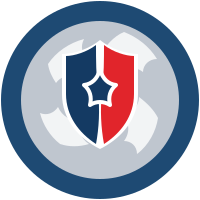
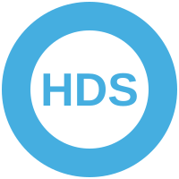
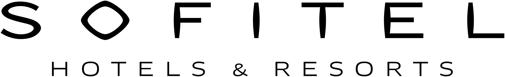
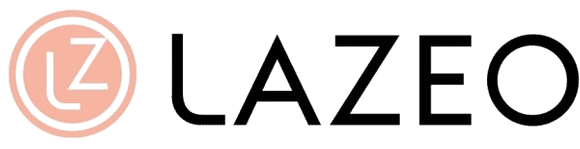

Océan
Toutes vos conversations, un seul flux.
Océan est le cœur entrant et sortant de Sairen : chaque message, chaque appel, chaque campagne, dans une boîte de réception collaborative et qualifiée par l'IA.
Tous les canaux, qualifiés automatiquement
WhatsApp, SMS, e-mail, voix, Instagram, Messenger, web : tout converge dans Océan. Chaque conversation reçoit priorité, type de client et analyse de sentiment — l'équipe traite dans le bon ordre.
- Vue partagée, multi-canaux
- Priorité & sentiment par l'IA
- Historique client complet en 1 clic
- Filtres & océans personnalisés
Des campagnes sortantes, cross-canal
Océan ne fait pas qu'écouter : il parle aussi. Lancez des campagnes outbound — WhatsApp, SMS, e-mail et agent vocal IA — vers des segments précis, et suivez l'avancée en temps réel. Réponses entrantes ? Elles reviennent dans l'inbox, dans la même conversation.
- Outbound WhatsApp · SMS · e-mail · vocal
- Segmentation par historique & tags
- Suivi : envoyés, ouverts, répondus
- Les réponses reviennent dans Océan
Au-delà du texte, Sairen passe de vrais appels : campagnes d'appels sortants, confirmations vocales, relances téléphoniques automatisées. L'agent parle, comprend les réponses, et met à jour la conversation dans Océan — à grande échelle.
Canaux
Tous les canaux, unifiés dans Océan
Vos clients vous parlent où ils veulent. Sairen réunit chaque canal dans une seule conversation.
 Tech Provider
Tech ProviderPartenaire technologique officiel de Meta
Sairen est Tech Provider du programme Meta. Concrètement : un accès direct à l'API WhatsApp Business Cloud, à Messenger et Instagram, sans intermédiaire. Activation rapide de WhatsApp, numéros vérifiés, campagnes via templates approuvés, fiabilité entreprise — le tout depuis Sairen.
Le canal n°1 en France. Conversations entrantes, réponses IA, campagnes sortantes via templates. Activation rapide grâce à notre statut Tech Provider Meta.
Rappels de RDV, confirmations, relances urgentes. Taux d'ouverture quasi total.
Support, suivi, échanges longs et pièces jointes. Unifié avec les autres canaux.
Agents vocaux IA entrants et sortants : RDV, qualification, relances. Ne manquez plus un appel.
RDV et consultations en visioconférence : lien généré, rappel envoyé, suivi rattaché. Idéal santé, conseil et services à distance.
DM et commentaires gérés depuis Océan. Parfait retail, beauté, hôtellerie. Connexion native via Meta.
Conversations Facebook centralisées. Connexion native via Meta.
Un chat sur votre site, animé par vos agents IA avec interfaces génératives.
Desk
Le travail d'équipe, structuré.
Là où Océan capte les conversations, Desk les transforme en action : des tâches claires, une communication interne façon Slack, et tout dans votre poche grâce à l'appli mobile.
Le rôle des humains
L'IA gère le volume. Vos équipes font la différence.
Sairen ne remplace pas vos collaborateurs : il les libère du répétitif pour qu'ils se concentrent sur ce qui compte — les cas sensibles, la relation, la décision.
Plusieurs cabinets, agences ou points de vente ? Chaque entité a son espace, ses canaux et ses droits — tout en restant pilotable depuis un seul compte.
Support, commercial, SAV : créez des équipes, routez-leur les bonnes conversations et tâches, et suivez leur charge.
Chaque collaborateur a son périmètre, ses tâches assignées et ses notifications. La responsabilité est claire, rien ne se perd.
De la conversation à la tâche, sans friction
Chaque échange capté dans Océan peut devenir une tâche assignable : statut, priorité, échéance, responsable. Vos équipes savent exactement quoi traiter, dans quel ordre — et rien ne tombe entre les mailles.
- Statuts clairs : Ouvert · À faire · Résolu
- Priorité & échéance sur chaque tâche
- Assignation à une personne ou une équipe
- Filtres : en cours, en retard, favoris
Une vraie messagerie d'équipe, intégrée
Desk intègre une vraie messagerie d'équipe : des canaux thématiques (#sales-b2b, #cmsm, #support), des messages directs, des mentions @. Et surtout : partagez une tâche dans un canal, mentionnez un collègue, et le contexte client suit — sans quitter Sairen.
- # Canaux par équipe, projet ou client
- Messages directs & groupes privés
- Mentions @ et partage de tâches inline
- Le contexte client toujours rattaché
Tout votre Desk, dans votre poche
Vos équipes ne sont pas toujours derrière un écran. Avec l'appli mobile Sairen, elles reçoivent les notifications en temps réel, répondent aux clients, traitent les tâches et discutent en interne — depuis n'importe où.
- Notifications push en temps réel
- Traiter une tâche entre deux rendez-vous
- Répondre aux clients en mobilité
- iOS & Android

@toi peux-tu confirmer ?
Structurez le travail de vos équipes.
Une démo pour voir Desk en action sur votre organisation.
Rainbow Studio
Agents IA & workflows, l'atelier de l'automatisation.
Deux briques qui se complètent : des agents IA qui comprennent et décident, des workflows qui exécutent à la lettre. Ensemble, ils automatisent vos échanges sans jamais vous faire perdre le contrôle.
La révolution
Workflow + Agent IA = le meilleur des deux mondes
Au milieu d'un workflow fiable, appelez un agent IA pour la partie qui demande du jugement. La rigueur du déterministe, l'intelligence du stochastique — exactement là où il faut.
 Agent IA décide→Action exécutée
Agent IA décide→Action exécutéeDéterministe quand il faut être sûr. Stochastique quand il faut être intelligent. C'est ça, Rainbow.
Agent IA
Un collègue virtuel qui comprend et décide
Là où chaque demande est différente, l'agent IA lit, comprend et répond avec jugement — en langage naturel, dans le ton de votre marque.
Un agent qui raisonne
Il comprend une demande floue, pose les bonnes questions, va chercher l'info et formule une réponse adaptée. Conscient de tout le contexte Océan & Desk.
Les meilleurs LLM, maîtrisés
Modèles de pointe, fine-tunés par métier, ou self-hosted en France pour les exigences fortes. Vous choisissez le bon niveau.
Présent sur tous les canaux
Un même agent répond sur WhatsApp, SMS, e-mail, voix, Instagram, Messenger et le widget web. Une seule personnalité, partout.
Sans code, sous contrôle
Personnalité, base de connaissance, garde-fous, escalade vers l'humain. L'AOP Builder encode vos procédures : pas d'invention en production.
Des exemples, par métier — testez-les en direct
Démos réelles. Chaque agent est généré par Sairen et peut se connecter à tous vos canaux de communication.
Vous accueillez vos clients 24/7, vous qualifiez sans effort, et vos équipes ne traitent plus que ce qui demande un vrai jugement humain.
Workflow
Des automatisations fiables, à la lettre
Quand le processus doit être prévisible, le workflow exécute vos règles sans jamais dévier. Traçable, reproductible, fiable.
Ce qui démarre le flux : un message entrant, un RDV pris, un import Excel, une heure précise.
Ce que le flux exécute : envoyer un WhatsApp, créer une tâche Desk, lancer un appel vocal IA, mettre à jour le CRM.
Les conditions et délais : « si pas de réponse sous 24h », « si client VIP », « attendre 2 jours ».
Une bibliothèque de nodes
Quand un RDV est pris, attendre 24h, envoyer un rappel WhatsApp, et si pas de réponse, appeler avec l'agent vocal.
Ou composez-le vous-même
Glissez les briques, reliez-les, testez — exactement comme dans Sairen. Aucune ligne de code.
Décrivez l'automatisation en une phrase — « RDV pris, rappel SMS 24h avant » — et Ulysse l'assemble. Vous validez, c'est en ligne.
Vos processus critiques tournent seuls, sans erreur ni oubli — que vous les construisiez à la main ou que vous les dictiez à Ulysse.
Automatisez sans perdre le contrôle.
Une démo pour voir agents IA et workflows travailler ensemble sur vos cas.
Ulysse
Votre copilote IA, en langage naturel.
Un modèle de langage qui connaît tout votre espace Sairen. Demandez une analyse, programmez une campagne, créez un workflow — en écrivant simplement, comme à un collègue.
Cas d'usage
Ce que vous pouvez lui demander
Ulysse ne répond pas seulement : il agit sur toute la plateforme.
Analyser vos données
Programmer vos campagnes Océan
Créer vos workflows Rainbow
Piloter Desk
Synthétiser
Recommander un agent
Ulysse, partout
Il pilote tout — et il peut vivre sur vos canaux
Ulysse n'est pas enfermé dans un tableau de bord. Posez-lui une question depuis WhatsApp : il vous répond, sort un chiffre, lance une campagne ou crée une tâche — comme un collègue qu'on texte. Le pilotage de Sairen, dans votre poche.
Pour les exigences les plus fortes, Ulysse tourne sur des modèles self-hosted en France : vos données ne sortent jamais de votre périmètre. Conformité RGPD, HDS et AI Act par conception.
Conscient de tout votre espace
Océan, Desk, Rainbow, Analytics : Ulysse voit la donnée reliée, pas des silos. Ses réponses sont contextuelles.
Il agit, il ne fait pas que parler
Créer une campagne, un workflow, une tâche : Ulysse exécute, avec votre validation.
Souverain & sécurisé
Modèles hébergés en France, données qui ne sortent pas de votre périmètre. Niveau entreprise.
CRM
Un seul contact, toute l'histoire.
Appel, WhatsApp, e-mail, Instagram, visite en boutique : Sairen réconcilie chaque interaction dans une fiche contact unique. Vos équipes et vos agents IA savent toujours à qui ils parlent — et ce qui s'est passé avant.
Tous les canaux alimentent la même fiche
Un client qui appelle, écrit sur WhatsApp puis passe en boutique reste une seule et même personne. Sairen réconcilie automatiquement numéros, e-mails et identités sociales — fini les doublons et les historiques éparpillés.
- Réconciliation automatique des identités
- Historique omnicanal, chronologique
- Dédoublonnage intelligent par l'IA
- Notes, tags et documents rattachés au contact
Une fiche qui se remplit toute seule
À chaque échange, l'IA extrait et met à jour les informations utiles : préférences, intentions, budget, urgence, sentiment. Votre connaissance client s'enrichit en continu — sans saisie manuelle.
- Préférences et contexte extraits des conversations
- Labels et segments mis à jour en temps réel
- Score d'engagement et sentiment par contact
- Vos agents IA s'appuient sur cette mémoire à chaque réponse
Le contexte change tout
Vos IA connaissent le client. Ça s'entend.
Tout ce contexte améliore la relation client — et surtout, il permet à vos agents IA de traiter chaque client en connaissance de cause : historique, préférences, dernier avis, dernière commande.
« Bonjour, qui êtes-vous ? Pouvez-vous m'expliquer votre demande depuis le début ? »
« Bonjour Mme Moreau, comment allez-vous depuis la dernière fois ? Merci d'avoir laissé un avis Google — votre chambre préférée est disponible pour le 15. »
Adapté à votre secteur
PRM, GRM… le RM de votre métier.
Un cabinet ne gère pas des « clients » mais des patients ; un hôtel, des guests ; une agence, des acquéreurs. Le CRM Sairen se moule sur votre métier : champs, cycles, labels et automatismes propres à votre secteur — et il fonctionne en autonomie, alimenté et tenu à jour par vos agents IA, sans saisie manuelle.
- Modèle de données propre à votre secteur, prêt à l'emploi
- Rempli et mis à jour automatiquement par les agents IA
- Relances, rappels et segments déclenchés tout seuls
Motif, praticien, historique de soins, rappels anti no-show — connecté au RIS/DPI.
Séjours, préférences, avis OTA, upsells — synchronisé avec votre PMS.
Commandes, paniers, réachat, fidélité — branché à Shopify ou votre ERP.
Budget, projet, visites, relances — chaque lead suivi jusqu'à la signature.
Ce que le CRM Sairen change
La mémoire client au cœur de la plateforme
Identité unifiée
Téléphone, e-mail, réseaux sociaux : toutes les identités d'un client convergent vers une seule fiche.
Historique omnicanal
Chaque appel, message et achat dans une timeline unique — quel que soit le canal d'origine.
Segments dynamiques
VIP, inactifs, prospects chauds : des segments qui se mettent à jour seuls, prêts pour vos campagnes.
Connecté à vos outils
Synchronisation avec votre CRM, ERP ou PMS existant : la donnée circule dans les deux sens.
Partagé humains & IA
Vos équipes et vos agents IA lisent la même fiche : personne ne fait répéter le client.
Conforme RGPD
Consentements tracés, droit à l'oubli natif, données hébergées en France.
Connaissez enfin vos clients.
Une démo pour voir la fiche contact unifiée, avec vos propres canaux.
La relation client
Une relation, comme une traversée.
Chaque client embarque pour un voyage : il part avec une question, traverse, arrive à une réponse, et revient. Sairen est le guide qui rend chaque étape plus fluide — du premier message jusqu'au réengagement.
Premier contact
Le client initie l'échange où il veut — WhatsApp, appel, formulaire, réseau social. Un agent IA répond immédiatement, 24/7, dans le ton de votre marque.
Qualification
L'IA comprend l'intention, détecte le sentiment, identifie le type de client et la priorité. La conversation arrive déjà triée et contextualisée.
Traitement interne
La demande devient une tâche claire dans Desk : assignée, suivie, priorisée. Les équipes collaborent par messages directs et canaux, depuis le bureau ou l'appli mobile.
Résolution & suivi
La réponse part sur le bon canal. Tout l'historique reste unifié : le client n'a jamais à se répéter, et rien ne se perd.
Après la résolution
Sairen entretient la relation : enquête de satisfaction, avis Google, message de suivi personnalisé au bon moment.
Campagnes & réengagement
Relances ciblées, campagnes saisonnières, réactivation des clients dormants : la conversation reprend, plus intelligent à chaque tour.
Le moteur de workflows
Derrière chaque étape, un enchaînement d'actions que vous composez sans code dans Rainbow Studio.


À chaque étape, des agents incarnés — un visage, un nom, un ton — épaulent vos équipes : ils accueillent, qualifient, relancent. Vos collaborateurs gardent la main sur ce qui compte vraiment.
Au-dessus de toutes les étapes, Ulysse orchestre en langage naturel : il relie Océan, Desk et Rainbow, analyse, et agit à votre place. Le cap, sans jamais se perdre.
Avant / Après
Ce que Sairen change, concrètement
La même relation client, sans puis avec Sairen. La différence se mesure.
- ✕ Appels manqués, messages WhatsApp sans réponse
- ✕ Chaque canal dans son coin, aucun historique
- ✕ Le client se répète à chaque interlocuteur
- ✕ Relances oubliées, no-shows fréquents
- ✕ Les équipes croulent sous le répétitif
- ✕ Aucune visibilité sur ce qui marche
- ✓ Réponse instantanée 24/7, sur tous les canaux
- ✓ Tout unifié dans Océan, historique complet
- ✓ Le contexte suit le client, partout
- ✓ Rappels & relances automatiques, no-shows en baisse
- ✓ L'IA absorbe le répétitif, l'humain se concentre
- ✓ Analytics granulaires : vous pilotez au chiffre
Le ROI
Des résultats qui se chiffrent
Avant → Après, sur 3 mois
Voyez-le sur votre réalité.
20 minutes pour découvrir comment Sairen guide chacun de vos clients, de bout en bout.
Sans engagement · 20 minutes · adapté à votre secteur
Analytics
Voyez ce que les autres ne peuvent pas voir.
Parce que tout passe par Océan et Desk, Sairen mesure chaque canal, chaque tâche, chaque agent, chaque étape de la relation. Une granularité totale — pas des moyennes floues.
Ce que vous mesurez
Une vue à 360° de la relation client
Par canal
Volume, sentiment et performance pour WhatsApp, appels, e-mail, réseaux — séparément.
Par équipe & agent
Charge, délai, taux de résolution par collaborateur et par agent IA.
Par étape de la relation
Où les clients décrochent, où l'IA accélère, où l'humain reprend la main.
Sentiment en continu
Chaque conversation est notée. Repérez l'insatisfaction avant l'avis négatif.
Campagnes & réengagement
Ouverture, réponse, reprise de RDV : ce qui ramène vraiment les clients.
Demandez à Ulysse
Posez la question en langage naturel, Ulysse sort le chiffre et l'explique.
Pilotez avec des vrais chiffres.
Une démo pour voir vos métriques de communication, en direct.
Prix
Un tarif pour chaque échelle.
Composez votre offre : un plan, vos utilisateurs, vos crédits de communication. Le prix s'ajuste en direct.
Nous gérons votre implémentation, de A à Z.
Vos logiciels métier sont complexes, vos contraintes de sécurité sont réelles. Nos AI specialists prennent en charge l'intégration technique complète pour que votre IA soit opérationnelle — et performante — dès le premier jour.
Parler à un AI specialist →Vos outils métier, vos flux existants et vos contraintes de conformité — tout est documenté avant de toucher au code.
ERP, CRM, PMS, RIS, Shopify, outils propriétaires : nos specialists connectent Sairen à votre stack réel, dans un environnement isolé et sécurisé.
Nous configurons des agents précis et des workflows fiables — conçus pour votre métier, testés en conditions réelles, sans improvisation.
Déploiement progressif, formation de vos équipes, documentation complète. Vous reprenez la main en toute autonomie.
WhatsApp marketing : €0.20
Tarification indicative. Pour un devis sur mesure ou +50 utilisateurs, parlez à notre équipe →
Estimez votre prix
Sélectionnez votre plan, ajustez les utilisateurs et les crédits.
Tarification indicative. Pour un devis sur-mesure ou +50 utilisateurs, parlez à notre équipe →
Étape 1
Créez votre compte
Démarrez gratuitement. Aucune carte bancaire requise.
En continuant, vous acceptez nos conditions. Données hébergées en France.
Étape 2
Faisons connaissance
On personnalise votre espace avec ces infos.
Étape 3
Quelle est la taille de votre équipe ?
Pour calibrer votre espace et nos recommandations.
Étape 4
Votre secteur ?
On adapte le vocabulaire et les modèles d'agents.
Étape 5
Votre objectif principal ?
Vous pourrez tout activer plus tard.
Étape 6
Vos premiers canaux ?
Sélectionnez-en un ou plusieurs. On vous aide à les connecter.
Étape 7 · Offre
Choisissez votre offre
Sans engagement. Changez ou annulez quand vous voulez.
Besoin entreprise (self-hosted, conformité spécifique) ? Découvrez le plan Entreprise
Étape 8 · Crédits
Quel volume de communication ?
Un seul compteur pour appels IA, SMS, WhatsApp, e-mail… Ajustable à tout moment.
Vous pourrez affiner précisément depuis la page Prix.
Étape 9 · Paiement
Activez votre offre
Paiement sécurisé. Sans engagement, annulable en un clic.
Chiffré · propulsé par Stripe · données bancaires jamais stockées par Sairen
Bienvenue à bord 🌊
Votre espace est prêt.
Partenaires
Déployez Sairen sous votre marque.
Agences, intégrateurs, éditeurs : proposez la puissance de Sairen à vos clients, avec votre identité. Une plateforme en marque blanche, pensée pour la revente.
votre domaine
en marque blanche
à votre nom
Vous fixez votre prix. Nous fournissons la technologie, les mises à jour et l'infrastructure.
Marque blanche
Votre logo, vos couleurs, votre domaine. Vos clients voient votre marque.
Multi-comptes
Gérez tous vos clients depuis une console partenaire unique, facturation centralisée.
Marges récurrentes
Un modèle de revenus récurrents et des conditions revendeur attractives.
Support dédié
Un interlocuteur Sairen, des ressources d'onboarding, un accompagnement technique.
Souveraineté incluse
Hébergement France, RGPD, HDS : les mêmes garanties que Sairen.
Roadmap partagée
Accès anticipé aux nouveautés et écoute de vos besoins terrain.
Devenons partenaires.
Parlons de votre activité et de la façon dont Sairen peut s'y intégrer.
CARRIÈRES
Embarquez. On construit la suite.
Une équipe resserrée, un produit deep tech utilisé chaque jour par des centaines d'organisations, et un cap clair : faire communiquer les entreprises autrement.
Ce que vous livrez le matin est utilisé l'après-midi. Pas de cycles interminables.
Design, IA et ingénierie au même étage. Le détail compte, l'esthétique aussi.
Des centaines d'organisations communiquent via ce que vous construisez.
On cherche des profils comme ça
Ingénieur·e IA / ML
Agents, voix, fine-tuning, orchestration. Vous aimez les modèles ET la prod.
Fullstack produit
Du WebGL au backend temps réel. Vous shippez des choses belles et solides.
Design produit
Vous savez rendre simple un système complexe. Le candy-glossy ne vous fait pas peur.
Go-to-market
Vous parlez métier avec un hôtelier le matin, une clinique l'après-midi.
Pas de poste qui colle ? Écrivez-nous quand même — les bons profils créent leur poste.
SÉCURITÉ & CONFORMITÉ
La confiance ne se déclare pas. Elle se prouve.
Certifications, hébergement souverain, chiffrement de bout en bout : chaque garantie est vérifiable. Sairen s'aligne sur le référentiel n°1 en matière de sécurité cloud — SecNumCloud, établi par l'ANSSI. Voici notre registre.

Architecture et pratiques alignées sur SecNumCloud, le référentiel n°1 de l'ANSSI pour le cloud de confiance.

Les données de santé sont hébergées en France chez un hébergeur certifié HDS.
Un système de management de la sécurité de l'information aligné sur la norme.
Sécurité, disponibilité et confidentialité alignées sur le référentiel AICPA SOC 2.
Minimisation, droit à l'oubli, registre des traitements — conçu RGPD dès l'origine.
Le registre des garanties
DEEP TECH
Sous la surface, la technologie.
Sairen est une entreprise de recherche appliquée : nous concevons des modèles et des architectures toujours plus novateurs pour faire communiquer les entreprises autrement.
Une reconnaissance de notre intensité technologique et de notre trajectoire d'innovation de rupture.
Fine-tunés par métier, self-hosted en France pour les exigences les plus fortes.
Le déterministe des workflows + le jugement des agents IA, dans le même moteur.
GenUI, agents vocaux naturels, workflows dictés en une phrase : nous inventons les usages.
Une plateforme, orchestrée pour chaque besoin.
La promesse de Sairen : communiquer autrement avec l'IA. Voici comment elle se décline, besoin par besoin.
Aucun cas d'usage ne correspond.
Un agent vocal qui décroche 24/7, qualifie le motif, pose les RDV et transfère les cas sensibles — configuré pour votre métier.
Rencontrer l'agent →Check-in, upsell, demandes de séjour : un agent qui connaît chaque client et répond sur WhatsApp comme au téléphone.
Rencontrer l'agent →Répond aux candidats le dimanche soir, collecte les pièces, pose les entretiens — et relance les dossiers incomplets.
Rencontrer l'agent →Qualifie chaque déclaration, collecte les pièces, ouvre le dossier et tient l'assuré informé à chaque étape.
Rencontrer l'agent →Agent vétérinaire · IrisTrie les urgences, pose les RDV, envoie les rappels vaccins — et rassure les maîtres à toute heure.
Rencontrer l'agent →Disponibilité des produits, ordonnances en attente, commandes : répond au comptoir comme au téléphone.
Rencontrer l'agent →Répondre 24/7, sans manquer un messageUn agent IA adapté et configuré à votre métier répond instantanément, à toute heure, sur t…
Découvrir →Automatiser les tâches répétitivesUn déclencheur dans une conversation lance un workflow Rainbow — qui peut appeler un agent…
Découvrir →Centraliser tous les canauxWhatsApp, appels, e-mails, réseaux : tout converge dans une seule inbox Océan. Vos équipes…
Découvrir →Lancer des campagnes cross-canalVous construisez la campagne comme un workflow Rainbow — qui intègre parfois un agent IA p…
Découvrir →Piloter toute la plateforme avec l'IAUlysse lit Océan, Desk et Rainbow, répond à vos questions, sort un chiffre et lance des ac…
Découvrir →Mesurer chaque conversationParce que tout passe par Océan, Desk et Rainbow, Analytics relie les chiffres au lieu de l…
Découvrir →Campagnes marketingDes campagnes multicanales segmentées — WhatsApp, SMS, e-mail — déclenchées au bon moment, mesurées en direct.
Découvrir →RecouvrementRelances d'impayés progressives et polies : rappel, plan de paiement, escalade humaine — le cash rentre, la relation reste.
Découvrir →Collecte d'avis GoogleSollicitation au meilleur moment après chaque interaction, réponses rédigées par l'IA, réputation pilotée.
Découvrir →Standard téléphonique IAUn agent vocal IA décroche 24/7, comprend en langage naturel, prend les RDV et transfère les cas sensibles — la fin des appels manqués et du SVI.
Découvrir →Satisfaction CSAT & NPSEnquêtes de satisfaction automatiques après chaque interaction, sentiment analysé par IA, détracteurs rattrapés avant l'avis négatif.
Découvrir →Onboarding clientBienvenue personnalisée, collecte de documents et relances automatiques : chaque nouveau client activé en heures, pas en semaines.
Découvrir →Rappels anti no-showConfirmations, rappels intelligents et liste d'attente IA : les créneaux annulés se recomblent tout seuls.
Découvrir →Devis & commandes autoUn e-mail de commande devient une commande ERP : stock vérifié, tarifs appliqués, confirmation en secondes.
Découvrir →Accueil multilingue30+ langues détectées et parlées nativement par l'IA, voix et texte — votre équipe travaille en français.
Découvrir →Chatbot site internetUn widget GenUI qui répond, affiche produits et créneaux dans le chat, et convertit vos visiteurs — installé en 1 ligne de code.
Découvrir →Agent d'audit e-mailL'IA lit vos boîtes partagées, détecte les demandes sans réponse et les devis qui refroidissent — rapport chaque matin.
Découvrir →Visio client sécuriséeUne visio chiffrée lancée depuis la conversation : le client rejoint depuis son navigateur, sans compte. Hébergée en France.
Découvrir →Paiement dans la conversationAcomptes, soldes et factures payés en 2 taps via un lien sécurisé WhatsApp ou SMS — relances d'encaissement automatiques.
Découvrir →Vue 360 de la communicationGroupe, établissement, équipe, canal : toute la communication consolidée, comparée entre sites, expliquée par Ulysse.
Découvrir →Landing pages embarquéesDes mini-pages aux couleurs de votre marque, envoyées par SMS ou e-mail : paiement, formulaire, RDV — sans site à construire.
Découvrir →Prise de RDV automatiséeL'agent propose les créneaux, confirme, rappelle et reprogramme — l'agenda se remplit sans personne au téléphone.
Découvrir →Qualification des leadsChaque demande entrante est qualifiée, scorée et routée vers la bonne personne — plus de leads perdus dans la boîte mail.
Découvrir →Réengagement clientsClients inactifs détectés et relancés avec une offre personnalisée ; NPS et sondages envoyés au fil de l'eau.
Découvrir →Répondre 24/7, sans manquer un message
Un agent IA adapté et configuré à votre métier répond instantanément, à toute heure, sur tous les canaux. Quand un cas demande un humain, il est escaladé en ticket dans Desk. Et chaque échange reste tracé dans Océan.
Comment Sairen l'orchestre
Les briques s'assemblent
En pratique
Un exemple concret
SMSE-mailVoixInstagramMessengerWebAccès direct à l'API WhatsApp Business via notre statut Tech Provider du programme Meta — activation rapide, numéros vérifiés, fiabilité entreprise.
 Marie D.WhatsApp · « Je voudrais un RDV »Bot · répond17:45
Marie D.WhatsApp · « Je voudrais un RDV »Bot · répond17:45 Assigné à Léna
Assigné à LénaChaque conversation est catégorisée par des labels (canal, motif, priorité). Un label « urgent » ou « réclamation » peut déclencher une escalade immédiate vers un humain dans Desk.
Communiquer autrement, ça commence ici.
20 minutes pour voir comment, chez vous aussi, on peut communiquer autrement.
Automatiser les tâches répétitives
Un déclencheur dans une conversation lance un workflow Rainbow — qui peut appeler un agent IA, interroger vos outils, puis créer et assigner une tâche dans Desk. Le répétitif disparaît, vos équipes gardent la main sur l'essentiel.
Comment Sairen l'orchestre
Les briques s'assemblent
En pratique
Un exemple concret
Quand un RDV est pris, attendre 24 h, envoyer un rappel WhatsApp, et si pas de réponse, appeler avec l'agent vocal.
Agent IAAppel vocal de relanceLe déclencheur du workflow, c'est souvent un label : « RDV pris », « panier abandonné », « sentiment négatif »… La catégorisation pilote l'automatisation.
Communiquer autrement, ça commence ici.
20 minutes pour voir comment, chez vous aussi, on peut communiquer autrement.
Centraliser tous les canaux
WhatsApp, appels, e-mails, réseaux : tout converge dans une seule inbox Océan. Vos équipes collaborent dans Desk autour des conversations, et Ulysse vous laisse tout retrouver et piloter en langage naturel.
Comment Sairen l'orchestre
Les briques s'assemblent
En pratique
Un exemple concret
Marie DuboisWhatsApp · prise de RDVNouveau client17:45Les labels structurent l'inbox : chaque conversation porte son canal, son statut et son motif. Les colonnes de vos vues sont des intersections de ces familles de labels.
Communiquer autrement, ça commence ici.
20 minutes pour voir comment, chez vous aussi, on peut communiquer autrement.
Lancer des campagnes cross-canal
Vous construisez la campagne comme un workflow Rainbow — qui intègre parfois un agent IA pour qualifier ou répondre. Océan gère l'envoi et le suivi des réponses, Desk fait remonter des tâches, et Analytics mesure ce qui marche.
Comment Sairen l'orchestre
Les briques s'assemblent
En pratique
Un exemple concret
Cibler les clients inactifs, envoyer une offre WhatsApp, qualifier avec l'agent IA, créer une tâche pour les leads chauds.
Agent IAQualifie les réponsesLa cible d'une campagne est un segment de labels (« inactif », « VIP », « no-show »). Les réponses re-catégorisent les contacts et peuvent déclencher d'autres flows.
Communiquer autrement, ça commence ici.
20 minutes pour voir comment, chez vous aussi, on peut communiquer autrement.
Piloter toute la plateforme avec l'IA
Ulysse lit Océan, Desk et Rainbow, répond à vos questions, sort un chiffre et lance des actions — même depuis WhatsApp. Le copilote qui orchestre, pour vous, l'ensemble des briques.
Comment Sairen l'orchestre
Les briques s'assemblent
En pratique
Un exemple concret
Combien de no-shows cette semaine, et relance-les
14 no-shows (label « no-show »). Je lance une relance WhatsApp via le workflow dédié et crée 3 tâches dans Desk.
Ulysse raisonne sur vos labels : il filtre, compte et agit par catégorie (« no-show », « urgent », « VIP ») sur Océan, Desk et Rainbow.
Communiquer autrement, ça commence ici.
20 minutes pour voir comment, chez vous aussi, on peut communiquer autrement.
Mesurer chaque conversation
Parce que tout passe par Océan, Desk et Rainbow, Analytics relie les chiffres au lieu de les éparpiller : par canal, par équipe, par agent, par étape. Et Ulysse vous sort la réponse en une phrase.
Comment Sairen l'orchestre
Les briques s'assemblent
En pratique
Un exemple concret
L'analyse se fait par label : volume et performance par canal, par motif, par statut, par étape. La catégorisation rend chaque chiffre actionnable.
Communiquer autrement, ça commence ici.
20 minutes pour voir comment, chez vous aussi, on peut communiquer autrement.
Labels & déclencheurs, le moteur de Sairen.
Tout, dans Sairen, repose sur les labels. Chaque conversation, contact ou tâche est catégorisé — canal, statut, motif, priorité. Ces labels organisent vos vues et déclenchent vos automatisations.
La mécanique
Des labels aux vues
Des primitives atomiques posées sur chaque conversation, contact ou tâche.
Les labels se rangent en familles sémantiques.
Une vue est une intersection de groupes.
Les déclencheurs
Un label déclenche un flow
La catégorisation ne sert pas qu'à ranger : elle pilote l'automatisation.
Agent IAQualifie & répondL'agent IA pose les bons labels — canal, motif, sentiment — sans intervention.
Vos colonnes sont des intersections de labels : chaque équipe voit ce qui la concerne.
Un label qui apparaît ou change peut lancer un workflow, une escalade ou une campagne.
Deux natures de labels
Cumulatifs ou exclusifs
Ils s'ajoutent sans s'exclure : une conversation peut être à la fois WhatsApp, VIP et « relance envoyée ». L'historique ne s'efface jamais.
Un seul à la fois : une conversation est soit nouvelle, soit en cours, soit résolue. C'est la machine à états de votre relation.
Vos vues
Une colonne = une intersection de labels
Vous composez vos vues Desk en croisant des familles de labels. Chaque équipe voit exactement son périmètre.
Marie DuboisSans effort
L'IA pose les labels pour vous
Agent IALit, comprend, catégorisePlus besoin de trier à la main : l'agent IA catégorise chaque interaction en temps réel. Vos vues, vos relances et vos analyses sont à jour automatiquement.
Les déclencheurs
Un label qui change, un flow qui part
Envie de voir vos labels en action ?
On cadre votre arborescence de labels et vos déclencheurs ensemble.
WORKFLOWS
Des automatisations puissantes, sans improvisation.
Construisez visuellement des workflows qui mêlent agents IA et étapes déterministes : déclencheurs, conditions, garde-fous, validation humaine. L'IA exécute votre processus — elle ne l'invente pas. Résultat : moins d'hallucinations, plus d'impact dans l'opérationnel.
Construction visuelle
Glissez, connectez, activez.
Chaque nœud est une étape claire de votre processus. Vous voyez tout, vous contrôlez tout.
Ajouter un nœud
Automatisez tout.
Des workflows sur mesure pour chaque équipe.
Routeur de demandes clients — classe chaque appel, WhatsApp ou e-mail entrant par motif et urgence, puis le route vers l'équipe ou l'agent compétent.
Pipeline de leads entrants — qualifie chaque nouveau lead, l'enrichit depuis le CRM, propose des créneaux et prépare le premier e-mail.
Répondeur e-mail — analyse chaque e-mail entrant et prépare un brouillon de réponse quand c'est pertinent. Votre équipe valide, l'IA n'envoie jamais seule.
Avis & réputation — demande l'avis au bon moment, répond automatiquement aux avis positifs et escalade les négatifs à votre équipe avec le contexte.
Explorer tous les cas d'usage →
Construisez en toute flexibilité.
Agentique quand il faut, 100 % déterministe quand vous voulez.
Nœud agent
Insérez un agent IA dans le flux pour les étapes qui demandent de comprendre : qualifier un motif, rédiger une réponse, extraire une information — toujours en sortie structurée.
Étapes déterministes
Le reste du flux est mécanique : conditions, boucles, actions dans vos outils, validation humaine. Même entrée, même sortie — testable et prévisible.
sinon → répondre + poser le RDV
Exemples de workflows
Trouvez des idées dans la bibliothèque.
Des workflows métiers éprouvés, prêts à activer et à adapter à vos règles.
Confirme, rappelle, reprogramme et recomble les créneaux annulés via la liste d'attente.
Par Sairen ✓ ⭐Avis GoogleSollicite l'avis au bon moment, répond automatiquement, escalade les avis négatifs.
Par Sairen ✓ 🧾Relance devisRelance chaque devis sans réponse, jusqu'à la signature ou l'escalade commerciale.
Par Sairen ✓ 💶RecouvrementRappels de paiement progressifs, multi-canal, avec passage à l'humain au bon seuil.
Par Sairen ✓ 🚀Onboarding clientAccueille chaque nouveau client : informations, documents, premier rendez-vous.
Par Sairen ✓ 📚Tous les cas d'usageVingt workflows détaillés, du standard téléphonique IA au réengagement client.
Explorer →Déterministe par design
Pourquoi vos workflows n'hallucinent pas.
Un workflow ne démarre que sur un événement précis : label posé, message reçu, créneau libéré. Jamais « quand l'IA le sent ».
VIP, urgence, sujet sensible : chaque branchement est une règle que vous avez écrite, lisible et testable.
Les étapes critiques attendent l'approbation de votre équipe — avec tout le contexte pour décider vite.
Questions & réponses
Vous vous demandez peut-être…
Une suite d'étapes automatisées — déclencheur, conditions, actions, agents IA — qui exécute un processus métier de bout en bout, selon vos règles.
Non. Tout se construit visuellement dans le studio Rainbow. Les équipes techniques peuvent aller plus loin via API et MCP.
Les étapes sont déterministes : l'IA n'intervient que dans des nœuds cadrés (rédiger, qualifier), entourés de garde-fous, de règles et de validation humaine.
Oui — la marketplace propose des workflows pré-configurés par secteur, que vous adaptez à vos règles en quelques minutes.
Votre premier workflow tourne aujourd'hui.
Activez un modèle de la marketplace ou construisez le vôtre — 500 crédits offerts.
AGENTS IA
Des agents IA qui connaissent votre métier.
Activez des agents pré-configurés par secteur — ou composez le vôtre. Ils lisent vos données, appliquent vos règles et agissent sur tous vos canaux, aux côtés de vos équipes. Cadrés par des règles déterministes : moins d'hallucinations, plus d'impact.
6 agents prêts à l'emploi · + le vôtre en quelques minutes
Anatomie
C'est quoi, un agent IA ?
Un collaborateur numérique, défini par cinq briques simples. Vous les configurez en langage naturel — l'agent fait le reste.
1 · Les instructions
Son rôle, son ton, ses limites — le « prompt », écrit par vous, en français.
2 · Les canaux
Où il parle : téléphone, WhatsApp, e-mail, SMS, chat web, Instagram.
3 · Les intégrations
Ce qu'il peut faire : lire l'agenda, écrire dans le CRM, encaisser, créer un ticket.
4 · La mémoire
Ce qu'il sait : l'historique de chaque client, vos documents, vos tarifs.
5 · Les garde-fous
Ce qu'il ne fera jamais : vos règles, la validation humaine, l'escalade.
Exemple concret
Les cinq briques, en situation.
Ce que vous configurez
L'agent « Sofia » d'un cabinet de radiologie, en cinq lignes :
Canaux : téléphone + WhatsApp.
Intégrations : agenda RIS, fiche patient CRM.
Mémoire : historique patient, consignes de préparation.
Garde-fou : question médicale → transfert au secrétariat.
Ce que vit votre client
Mardi 19h42, cabinet fermé — le téléphone sonne :
Sofia : « Bien sûr Mme Garcia. Je vois votre RDV de 9h40 — je vous propose jeudi 10h15 ou vendredi 14h. À jeun, comme indiqué dans votre convocation. »
Agenda mis à jour · fiche patiente enrichie · équipe notifiée
La bibliothèque
Des agents prêts à l'emploi.
Choisissez votre métier et parlez à un agent Sairen en conditions réelles — 30 secondes, aucune inscription.
Standard téléphonique, RDV, no-show
Parler à l'agent →Réception, check-in, upsell, avis
Parler à l'agent →Prise de RDV, rappels, relances
Parler à l'agent →Qualification, sinistres, suivi
Parler à l'agent →Iris · VétérinaireUrgences, RDV, rappels vaccins
Parler à l'agent →Disponibilités, conseils, commandes
Parler à l'agent →Un agent pour chaque cas d'usage.
Choisissez un besoin, voyez l'agent le traiter.
Appelant · téléphone, 19h42« Bonjour, vous êtes ouverts demain ? Je voudrais un rendez-vous. »
Agent · Standard IA« Bonjour ! Oui, ouverts de 9h à 18h. Je vous propose demain 10h15 ou 14h30 — lequel préférez-vous ? »
Appel décroché en 1 sonnerie · motif qualifié · RDV posé
Standard téléphonique 24/7 — l'agent vocal décroche à toute heure, comprend en langage naturel, qualifie et transfère les cas sensibles. Fini les appels manqués et le SVI.
Cliente · WhatsApp, 12h30« Un créneau cette semaine plutôt en fin de journée ? »
Agent · RDV« Jeudi 18h30 ou vendredi 19h avec Laura ? Je bloque le créneau et j'envoie un rappel la veille. »
RDV posé dans l'agenda · rappel J-1 programmé · fiche mise à jour
Prise de rendez-vous — propose les créneaux, confirme, replanifie. L'agenda se remplit sans personne au téléphone, sur tous les canaux.
Agent · Rappel« Bonjour Mme Roux, on se voit demain à 14h. Confirmez-vous ? Répondez OUI, ou proposez un autre moment. »
Client · SMS« Finalement jeudi ce serait mieux »
Agent · Rappel« C'est reprogrammé jeudi 14h. Le créneau de demain est proposé à la liste d'attente. »
Absence évitée · créneau recomblé automatiquement
Anti no-show — confirmations, rappels intelligents et reprogrammation. Les créneaux annulés se recomblent seuls via la liste d'attente.
Agent · Satisfaction« Merci pour votre visite ! Comment s'est passé votre rendez-vous ? (1 à 5) »
Client« 5 ⭐ tout était parfait »
Agent · Satisfaction« Ravi ! Un avis Google nous aiderait beaucoup — voici le lien. »
CSAT collecté · avis positif routé vers Google · détracteurs escaladés
Avis & satisfaction — sollicite l'avis au bon moment, dirige les satisfaits vers Google et rattrape les mécontents avant l'avis négatif.
Agent · Relance« Bonjour, petit rappel : la facture n°2204 (2 380 €) arrive à échéance. Régler en 1 clic, ou souhaitez-vous un échéancier ? »
Client« Un échéancier svp »
Agent · Relance« Noté — 3 fois 793 €. Je vous envoie le lien. »
Relance progressive · plan proposé · escalade humaine si besoin
Relance & recouvrement — rappels polis et progressifs, proposition de plan de paiement, passage à l'humain au bon seuil. Le cash rentre, la relation reste.
Prospect · formulaire web« Je cherche un logiciel pour 40 utilisateurs, budget ~15k »
Agent · Leads« Merci ! 40 utilisateurs, budget 15k — profil idéal pour un accompagnement dédié. Un expert vous rappelle aujourd'hui. Mardi 15h vous convient ? »
Lead qualifié & enrichi · scoré · commercial notifié · RDV proposé
Qualification de leads — qualifie chaque nouveau contact, l'enrichit depuis vos données, le score et transmet au bon commercial avec le contexte.
Explorer tous les cas d'usage →
Simple à configurer
Composez votre agent en quelques minutes.
Instructions sur mesure
Décrivez le rôle, le ton et les limites de votre agent en langage naturel. Il suit vos process, pas les siens.
Toujours : qualifier le motif, proposer un créneau.
Jamais : donner un avis médical → transférer à l'équipe.
Ajoutez des capacités
Branchez vos outils via connecteurs natifs, API ou MCP — l'agent lit et écrit dans vos systèmes.
Cadrés, jamais en roue libre
Une IA qui n'invente rien.
Déclencheurs, labels et conditions : l'agent suit le workflow que vous définissez, étape par étape.
Les étapes sensibles remontent à vos équipes, avec tout le contexte — l'IA ne décide jamais seule d'un sujet critique.
L'agent répond depuis votre base de connaissances et vos systèmes — pas depuis son imagination.
Questions & réponses
Vous vous demandez peut-être…
Un collaborateur IA configuré pour un rôle précis — réception, admissions, relances — qui lit vos données, agit sur vos canaux et suit vos règles.
Un chatbot répond ; un agent agit : il pose des RDV dans votre agenda, met à jour le CRM, déclenche des workflows, escalade à l'équipe.
Les agents vivent dans la même plateforme que vos équipes — Océan et Desk. Chacun voit ce que l'agent a fait, et peut reprendre la main à tout moment.
Oui — vos systèmes métier se branchent via connecteurs natifs, API, MCP et A2A. L'agent lit et écrit dedans, sans double saisie.
Activez votre premier agent aujourd'hui.
500 crédits offerts, sans carte bancaire. Ou 20 minutes de démo sur votre réalité métier.
Informations légales
Conditions Générales
Date de mise à jour : 27/02/2025
1. Identification de SAIREN
La société SAIREN (« SAIREN »), société par actions simplifiée immatriculée au RCS de Nanterre sous le n°949 641 633, dont le siège social est situé 5, allée d'Orléans 92200, Neuilly-sur-Seine (France).
2. Les Services proposés
SAIREN met à disposition de ses clients (les « Clients ») une solution SaaS accessible depuis le site www.sairen.io (la « Solution »). Cette Solution permet notamment d'assister et de répondre instantanément aux demandes des utilisateurs finaux du Client (les « Utilisateurs Finaux ») et de générer des appels et/ou messages à destination des Utilisateurs Finaux. Ci-après ensemble dénommés (les « Services »), qui reposent sur l'intelligence artificielle.
3. Documents contractuels
La relation contractuelle entre le Client et SAIREN est régie, par ordre hiérarchique décroissant, par les documents suivants :
Le Devis
Si les Services sont souscrits via devis, celui-ci prime sur les autres documents (le « Devis ») :
- Il est établi sur la base des besoins du Client.
- Le Client doit l'accepter par écrit (y compris par email) dans un délai de 14 jours à compter de son émission.
- En cas de contradiction, le Devis prévaut sur les Conditions Générales.
- En cas de contradiction, le Devis le plus récent prévaut sur le(s) plus ancien(s).
Les Conditions Générales et annexes
Elles définissent : les modalités de l'octroi d'une licence d'utilisation sur la Solution ; les modalités et conditions de fourniture des Services ; les obligations respectives des parties. Elles sont accessibles par un lien direct en bas de page de la Solution.
Modalités d'acceptation des Conditions Générales
- En cas de Devis : l'acceptation du Devis vaut acceptation des Conditions Générales dans leur version en vigueur à la date du Devis. À noter que le paiement par le Client de la première facture due au titre des Services est réputé valoir acceptation du Devis et des Conditions Générales.
- En l'absence de Devis : le Client accepte les Conditions Générales en cochant une case dans le formulaire d'inscription. S'il n'accepte pas l'intégralité des Conditions Générales, il ne peut pas accéder aux Services.
4. Conditions d'accès aux Services
(i) Le Client est une personne morale agissant par l'intermédiaire d'une personne physique disposant du pouvoir ou de l'habilitation requise pour contracter au nom du Client et pour son compte.
(ii) Le Client a la qualité de professionnel, entendu comme toute personne physique agissant à des fins entrant dans le cadre de son activité commerciale, industrielle, artisanale, libérale ou agricole, y compris lorsqu'elle agit au nom ou pour le compte d'un autre professionnel.
5. Description des Services
5.1 Accès à la Solution
Le Client peut accéder aux Services en allant directement sur la Solution. Pour accéder aux Services, le Client doit se créer un compte en remplissant le formulaire prévu à cet effet sur la Solution et doit fournir à SAIREN l'ensemble des informations marquées comme obligatoires.
L'inscription entraîne automatiquement l'ouverture d'un compte au nom du Client (le « Compte Administrateur ») qui lui permet d'accéder aux Services à l'aide de son identifiant de connexion et de son mot de passe. Le Client est seul responsable du maintien de la confidentialité de son identifiant de connexion et/ou mot de passe.
Le Client s'engage à utiliser personnellement les Services et à ne permettre à aucun tiers de les utiliser à sa place ou pour son compte, sauf à en supporter l'entière responsabilité. Le Client s'engage à informer SAIREN de toute utilisation non autorisée du Compte Administrateur dont il aurait connaissance. Il reconnaît à SAIREN le droit de prendre toutes les mesures appropriées en pareil cas.
5.2 Description de la Solution et des Services
Avant toute souscription, le Client reconnaît qu'il peut prendre connaissance sur la Solution des caractéristiques des Services et de leurs contraintes, notamment techniques. Le Client reconnaît que la mise en œuvre des Services nécessite d'être connecté à internet et que la qualité des Services dépend de cette connexion, dont SAIREN n'est pas responsable.
Les Services auxquels le Client a souscrit sont décrits sur la Solution ou, le cas échéant, sur le Devis. Les Services comprennent notamment la mise à disposition d'agents conversationnels automatisés (les « Agents ») adaptés aux besoins spécifiques du Client :
- joignables par les Utilisateurs Finaux pour les assister et répondre (les « Réponses ») à leurs demandes (les « Requêtes ») ;
- ou permettant d'entrer en contact avec les Utilisateurs Finaux sur demande du Client via un serveur vocal ou textuel automatisé (notamment via iMessage, WhatsApp ou email).
L'Agent ne répondra et n'émettra des appels entrants et/ou sortants que pendant le temps d'appel (le « Temps d'Appel ») compris dans l'offre à laquelle aura souscrit le Client parmi les offres proposées par SAIREN (les « Offres »). Le contenu des Offres est détaillé sur la Solution ainsi que par le service commercial de SAIREN en cas de souscription via Devis.
Le Client pourra souscrire un forfait supplémentaire (le « Forfait ») s'il souhaite que soit mis à sa disposition un Agent répondant aux Requêtes des Utilisateurs Finaux et capable d'entrer en contact avec eux via une interface de discussion textuelle (notamment via iMessage, WhatsApp ou email). Les messages entrants et sortants ne seront pris en charge par l'Agent que dans la limite souscrite par le Client. Le Client pourra librement débloquer du Temps d'Appel supplémentaire et faire évoluer son Forfait via la Solution.
Dans le cadre des Services auxquels le Client a souscrit, un numéro de téléphone (le « Numéro ») sera mis à sa disposition par SAIREN et généré par une société tierce d'attribution de numéros de téléphone. Le Client pourra paramétrer son Agent manuellement ou via le chat de la Solution et lui communiquer des lignes de conduite à suivre lors de ses contacts avec les Utilisateurs Finaux.
SAIREN se réserve la possibilité de proposer tout autre Service. Certaines options d'intégration complexes et demandes de personnalisation des Services pourront également être sollicitées par le Client via Devis.
5.3 Licence d'utilisation de la Solution
SAIREN concède au Client, pour la durée de souscription aux Services et moyennant le paiement du prix défini à l'article « Conditions financières », une licence non exclusive, personnelle et non transmissible d'utilisation de la Solution dans sa version la plus récente, aux seules fins de fourniture des Services.
Le Client s'interdit formellement de :
- reproduire, arranger, adapter, de façon permanente ou provisoire, l'un des éléments de la Solution en tout ou en partie, par tous moyens et sous toutes formes ;
- procéder à toute forme d'exploitation commerciale de la Solution auprès de tiers ;
- vendre, céder, fournir, prêter, louer, transférer ou distribuer la Solution, en concéder des sous-licences ou autres droits d'usage, ou plus généralement communiquer à un tiers ou à une société affiliée tout ou partie de la Solution ;
- modifier la Solution et/ou fusionner, intégrer tout ou partie de la Solution dans d'autres programmes informatiques ;
- compiler la Solution, la décompiler, désassembler, traduire, analyser, procéder au reverse engineering ou tenter d'y procéder, sauf dans les limites autorisées par la loi et notamment à l'article L. 122-6-1 du Code de la propriété intellectuelle ;
- utiliser la Solution pour développer un produit concurrent ;
- et plus généralement effectuer tout acte d'utilisation ou d'exploitation de la Solution non compris dans la licence.
5.4 Hébergement, support et maintenance de la Solution
Hébergement — SAIREN assure, dans les termes d'une obligation de moyens, l'hébergement de la Solution ainsi que des données saisies sur la Solution, sur ses serveurs ou par l'intermédiaire d'un prestataire d'hébergement professionnel. Les Parties pourront convenir que SAIREN collabore directement avec l'hébergeur du Client, sous réserve que celui-ci mette à disposition de SAIREN une machine virtuelle.
Support technique — SAIREN fournit au Client un service de support technique d'assistance et de conseil disponible du lundi au vendredi, hors jours fériés, de 8h30 à 20h, par téléphone au 07.81.25.94.89 ou par mail à l'adresse support@sairen.io. En fonction du besoin identifié, SAIREN estimera le délai de sa réponse et la nature de celle-ci et en tiendra informé le Client. Le support est assuré à distance.
Maintenance — Le Client bénéficie pendant la durée des Services d'une maintenance, notamment corrective et évolutive. Dans ce cadre, l'accès à la Solution peut être limité ou suspendu. Concernant la maintenance corrective, SAIREN fait ses meilleurs efforts pour corriger tout dysfonctionnement ou bogue relevé sur la Solution. Concernant la maintenance évolutive, SAIREN pourra la réaliser automatiquement et sans information préalable ; elle comprend des améliorations des fonctionnalités, l'ajout de nouvelles fonctionnalités et/ou d'installations techniques (extensions mineures ou majeures). L'accès à la Solution peut par ailleurs être limité ou suspendu pour des raisons de maintenance planifiée.
6. Durée
Le Client souscrit aux Services sous forme d'abonnement (l'« Abonnement »). Sauf mention contraire dans le Devis, l'Abonnement débute au jour de sa souscription pour une période initiale de douze (12) mois ou d'un (1) mois selon l'option retenue par le Client. Il se renouvelle tacitement, pour des périodes successives de même durée que la période initiale (avec la période initiale, les « Périodes »), de date à date, sauf si l'Abonnement est dénoncé dans les conditions de l'article « Fin des Services ».
7. Conditions financières
7.1 Prix des Services
Le prix des différentes Offres et des Forfaits complémentaires est indiqué sur la Solution et dans le Devis le cas échéant. Les prix sont exprimés en euros et s'entendent hors taxes. Au-delà du Temps d'Appel souscrit dans l'Offre, le coût de chaque minute d'appel supplémentaire est indiqué sur la Solution ou, le cas échéant, dans le Devis. Les prix des Services peuvent être révisés à tout moment dans les conditions de l'article « Modification des Conditions Générales ». SAIREN est libre de proposer des offres promotionnelles ou des réductions de prix.
7.2 Modalités de facturation et de paiement
SAIREN adresse au Client une facture par Période par tout moyen utile. Le paiement est effectué par prélèvement automatique à la souscription de l'Abonnement, puis à chaque renouvellement, sauf mention contraire indiquée dans le Devis.
7.3 Retards et défauts de paiement
Le Client est informé et accepte expressément que tout retard de paiement de tout ou partie d'une somme due à son échéance entraînera automatiquement, sans préjudice des dispositions de l'article « Sanctions en cas de manquement » et à partir du jour suivant la date de paiement figurant sur la facture :
- l'exigibilité anticipée de toutes les sommes dues par le Client et leur paiement immédiat, quelles que soient les conditions de paiement convenues ;
- la suspension immédiate des Services jusqu'au paiement intégral de toutes les sommes dues ;
- la facturation au profit de SAIREN d'un intérêt de retard au taux de 3 (trois) fois le taux de l'intérêt légal, assis sur le montant de l'intégralité des sommes dues par le Client, et d'une indemnité forfaitaire de 40 (quarante) euros au titre des frais de recouvrement.
8. Obligations du Client
8.1 Concernant la fourniture d'informations
Le Client s'engage à fournir à SAIREN toutes les informations nécessaires à la souscription et à l'utilisation des Services.
8.2 Concernant le Compte Administrateur
Le Client : garantit que les informations transmises dans le formulaire sont exactes et s'engage à les mettre à jour ; reconnaît que ces informations valent preuve de son identité et l'engagent dès leur validation ; est responsable du maintien de la confidentialité et de la sécurité de son identifiant et mot de passe, tout accès à la Solution à l'aide de ces derniers étant réputé effectué par lui.
Le Client doit immédiatement contacter SAIREN aux coordonnées mentionnées à l'article « Identification de SAIREN » s'il constate que son Compte Administrateur a été utilisé à son insu. Il reconnaît que SAIREN aura le droit de prendre toutes mesures appropriées en pareil cas.
8.3 Concernant l'utilisation des Services
Le Client est responsable de son utilisation des Services et de toute information qu'il partage dans ce cadre. Il est également responsable de l'utilisation des Services et de toutes informations partagées par les Utilisateurs Finaux. Il s'engage à ce que les Services soient exclusivement utilisés par lui et/ou les Utilisateurs Finaux, soumis aux mêmes obligations que lui.
Le Client s'interdit de détourner les Services à des fins autres que celles pour lesquelles ils ont été conçus, et notamment pour : exercer une activité illégale ou frauduleuse ; porter atteinte à l'ordre public et aux bonnes mœurs ; porter atteinte à des tiers ou à leurs droits, de quelque manière que ce soit ; violer une disposition contractuelle, législative ou règlementaire ; exercer toute activité de nature à interférer dans le système informatique d'un tiers, notamment aux fins d'en violer l'intégrité ou la sécurité ; effectuer des manœuvres visant à promouvoir ses services et/ou sites ou ceux d'un tiers ; aider ou inciter un tiers à commettre l'un des actes listés ci-dessus.
Le Client s'interdit également de : copier, modifier ou détourner tout élément appartenant à SAIREN ou tout concept qu'elle exploite ; adopter tout comportement de nature à interférer avec ou détourner les systèmes informatiques de SAIREN ou porter atteinte à ses mesures de sécurité ; porter atteinte aux droits et intérêts financiers, commerciaux ou moraux de SAIREN ; commercialiser, transférer ou donner accès de quelque manière que ce soit aux Services, aux informations hébergées sur la Solution ou à tout élément appartenant à SAIREN.
Le Client garantit SAIREN contre toute réclamation et/ou action qui pourrait être exercée à son encontre à la suite de la violation de l'une de ses obligations. Le Client indemnisera SAIREN du préjudice subi et la remboursera de toutes les sommes qu'elle pourrait avoir à supporter de ce fait.
Le Client s'interdit de donner des lignes directrices à l'Agent : portant atteinte à l'ordre public et aux bonnes mœurs (éléments pornographiques, obscènes, indécents, choquants ou inadaptés à un public familial, diffamatoires, injurieux, violents, racistes, xénophobes ou révisionnistes) ; portant atteinte aux droits de tiers (contenus contrefaisants, atteinte aux droits de la personnalité, etc.) et plus généralement violant une disposition contractuelle, législative ou règlementaire ; préjudiciable à des tiers de quelque manière que ce soit ; mensongères, trompeuses ou promouvant des activités illicites, frauduleuses ou trompeuses ; nuisibles aux systèmes informatiques de tiers. Cette liste n'est pas exhaustive.
Le Client reconnaît : que les Agents proposés par SAIREN dans le cadre des appels et messages entrants sont spécialisés dans l'assistance et le support des Utilisateurs Finaux et n'ont pas vocation à l'assister dans d'autres domaines ; que l'exactitude et la véracité de la Réponse communiquée par l'Agent ne sont valables qu'à l'heure et au jour où elle est envoyée par SAIREN et sont susceptibles d'évoluer ; que les Réponses sont générées grâce à un outil d'intelligence artificielle, SAIREN ne pouvant garantir qu'elles soient exemptes de toute erreur ou inexactitude ; que les Réponses dépendent des lignes directrices ajoutées par le Client, SAIREN n'étant pas responsable en cas d'erreur due à son contenu ; de ne pas compter sur la Réponse comme unique source de vérité ou d'information, la Solution n'étant pas un outil de prise de décision ; que la récurrence des appels et messages sortants devra rester raisonnable, SAIREN se réservant le droit de les suspendre en cas d'abus et/ou de spams.
Le Client reconnaît que SAIREN n'est pas responsable des problèmes d'utilisation liés au Numéro, celui-ci étant généré par une société tierce d'attribution de numéros de téléphone.
9. Obligations et responsabilité de SAIREN
SAIREN s'engage à fournir les Services avec diligence, étant précisé qu'elle est tenue à une obligation de moyens. SAIREN s'engage à respecter la règlementation en vigueur, et plus particulièrement la règlementation applicable en matière de téléphonie et de solutions logicielles d'intelligence artificielle.
9.1 Concernant la qualité des Services
SAIREN fait ses meilleurs efforts pour fournir au Client des Services de qualité. À cette fin, elle procède régulièrement à des contrôles afin de vérifier le fonctionnement et l'accessibilité de ses Services et peut ainsi réaliser une maintenance dans les conditions précisées à l'article « Maintenance ».
SAIREN n'est néanmoins pas responsable des difficultés ou impossibilités momentanées d'accès à ses Services qui auraient pour origine : des circonstances extérieures à son réseau (notamment la défaillance partielle ou totale des serveurs du Client, des applications tierces : fournisseur du Numéro, WhatsApp, iMessage, outil d'envoi d'emails) ; la défaillance d'un équipement, d'un câblage, de services ou de réseaux non inclus dans les Services ; l'interruption des Services du fait des opérateurs télécoms ou des fournisseurs d'accès à internet ; l'intervention du Client, notamment via une mauvaise configuration appliquée sur les Services ; un cas de force majeure.
Par ailleurs, elle ne garantit pas que les Services : soumis à une recherche constante pour en améliorer la performance et le progrès, seront totalement exempts d'erreurs, de vices ou défauts ; étant standards et nullement proposés en fonction des contraintes personnelles du Client, répondront spécifiquement à ses besoins et attentes, sous réserve des options sélectionnées via Devis.
9.2 Concernant la sauvegarde des données sur la Solution
SAIREN fait ses meilleurs efforts pour sauvegarder toutes les données saisies sur la Solution. Sauf en cas de fautes avérées de sa part, SAIREN n'est pas responsable de toute perte de données au cours des opérations de maintenance.
9.3 Concernant le stockage et la sécurité des données
SAIREN fournit des capacités de stockage suffisantes pour l'exploitation des Services et fait ses meilleurs efforts pour assurer la sécurité des données en mettant en œuvre des mesures de protection des infrastructures et de la Solution, de détection et prévention des actes malveillants et de récupération des données.
SAIREN s'engage à n'utiliser les données, et plus généralement tous les éléments qui pourront lui être transmis dans le cadre des présentes, qu'aux fins d'exécution des Services, et à ne pas les diffuser ou partager avec quelque tiers que ce soit, sauf demande ou accord exprès du Client. SAIREN garantit au Client la parfaite conservation des données pendant la durée des Services et s'engage à les détruire, sur demande de celui-ci, à la fin des Services. Par exception, le Client accepte que SAIREN puisse réutiliser ses données dans le but de nourrir, développer et améliorer la Solution et les Services.
10. Limitation de la responsabilité de SAIREN
La responsabilité de SAIREN est limitée aux seuls dommages directs avérés que le Client subit du fait de l'utilisation des Services. À l'exception des dommages corporels, décès et faute lourde, et sous réserve d'avoir émis une réclamation par lettre recommandée avec accusé de réception dans un délai d'un mois suivant la survenance du dommage, la responsabilité de SAIREN ne saurait être engagée pour un montant supérieur au plafond de son assurance de responsabilité civile professionnelle.
SAIREN n'est pas responsable du contenu et de la fréquence des appels et messages sortants, leur paramétrage étant réalisé exclusivement par le Client qui en assume l'entière responsabilité. Le Client reconnaît que SAIREN n'est pas responsable des problèmes de connexion et d'utilisation de la Solution imputables à une application tierce (telle que WhatsApp ou iMessage).
SAIREN décline toute responsabilité concernant le bon respect des normes et recommandations mises en place par l'ARCEP : par le Client dans son utilisation de la Solution (notamment les appels entrants et sortants réalisés à destination des Utilisateurs Finaux) ; par les opérateurs télécoms ou internet, ou par des applications tierces (fournisseur du Numéro, WhatsApp, iMessage).
11. Modes de preuve admis
La preuve peut être établie par tout moyen. Le Client est informé que les messages échangés par le biais de la Solution ainsi que les données recueillies sur la Solution et les équipements informatiques de SAIREN constituent l'un des modes de preuve admis, notamment pour démontrer la réalité des Services réalisés et le calcul de leur prix.
12. Confidentialité
Le Client s'engage à garder strictement confidentiels tous les documents et informations de nature juridique, commerciale, industrielle, stratégique, technique ou financière relatifs à SAIREN ou détenus par celle-ci, dont il aurait eu connaissance dans le cadre de l'exécution du présent contrat, et à ne pas les divulguer sans l'accord écrit préalable de SAIREN.
Le Client s'interdit notamment d'utiliser les informations : (i) pour ses propres besoins ou à son propre profit ; (ii) au profit d'un concurrent de SAIREN ; (iii) pour se mettre en relation, directement ou indirectement, avec les clients ou les fournisseurs de SAIREN.
Cette obligation ne s'étend pas aux documents et informations : (i) dont la Partie qui les reçoit avait déjà connaissance ; (ii) déjà publics lors de leur communication ou qui le deviendraient sans violation des Conditions Générales ; (iii) reçus d'un tiers de manière licite ; (iv) dont la communication serait exigée par les autorités judiciaires, en application des lois et règlements ou en vue d'établir les droits d'une Partie. Elle s'étend à l'ensemble des employés, collaborateurs, stagiaires, dirigeants et mandataires du Client ainsi qu'à ses conseils, affiliés et cocontractants, et prend effet dès l'acceptation des Conditions Générales pour continuer à produire ses effets pendant les 5 ans suivant la fin des présentes, pour quelque cause que ce soit.
13. Propriété intellectuelle
La Solution est la propriété de SAIREN, de même que les logiciels, infrastructures, certaines bases de données et contenus de toute nature (textes, images, visuels, musiques, logos, marques, etc.) qu'elle exploite. Ils sont protégés par tous droits de propriété intellectuelle ou droits des producteurs de bases de données en vigueur. La licence que SAIREN consent au Client n'entraîne aucun transfert de propriété.
Le Client et les Utilisateurs Finaux bénéficient d'une licence en mode SaaS non exclusive et non transmissible d'utilisation de la Solution pour la durée prévue à l'article « Durée ». En conséquence, tous les désassemblages, décompilations, décryptages, extractions, réutilisations, copies et plus généralement tous les actes de reproduction, représentation, diffusion et d'utilisation de l'un quelconque des éléments composant la Solution, en tout ou en partie, sans l'autorisation de SAIREN, sont strictement interdits et pourront faire l'objet de poursuites judiciaires.
14. Données personnelles
14.1 Dispositions générales
Les Parties s'engagent, chacune pour ce qui la concerne, à se conformer à toutes les obligations légales et réglementaires qui leur incombent en matière de protection des données à caractère personnel, notamment la loi 78-17 du 6 janvier 1978 modifiée dite « Loi Informatique et Libertés » et le règlement UE 2016/679 du 27 avril 2016 dit « RGPD » (ensemble la « Réglementation applicable »).
Aux fins de gestion de la relation contractuelle entre les Parties, chaque Partie traite les données à caractère personnel de ses interlocuteurs chez l'autre Partie en qualité de responsable de traitement, pour la durée des Services. Ce traitement est nécessaire à la bonne exécution des Services et ne concerne que des données d'identification (notamment nom, prénom, adresse email, numéro de téléphone), conservées pendant la durée strictement nécessaire à la gestion des relations contractuelles. Le personnel des Parties, leurs services de contrôle (commissaire aux comptes notamment) et leurs sous-traitants pourront y avoir accès. Ce traitement pourra donner lieu à l'exercice des droits prévus par la Réglementation applicable : (i) communication et, le cas échéant, rectification ou suppression des données ; (ii) effacement ou limitation du traitement ; (iii) opposition pour motifs légitimes ; (iv) portabilité des données ; (v) réclamation auprès d'une autorité de contrôle compétente.
14.2 Traitements par SAIREN en tant que sous-traitant
Dans le cadre des Services, SAIREN traite des données à caractère personnel au nom et pour le compte du Client en qualité de sous-traitant, tandis que le Client agit en qualité de responsable de traitement. Les caractéristiques des traitements sont décrites en Annexe 1.
Traitement des données — SAIREN s'engage à ne traiter les données que pour les finalités listées à l'Annexe 1 et conformément aux instructions documentées du Client, y compris s'agissant des transferts hors UE. SAIREN informe le Client si une instruction lui paraît constituer une violation de la Réglementation applicable, et peut suspendre le traitement jusqu'à modification de l'instruction, sans remboursement pour la période de suspension. Si le Client maintient l'instruction litigieuse, SAIREN peut résilier les Services sans délai et sans frais. En cas de transfert imposé par le droit applicable, SAIREN en informe le Client avant le traitement, sauf interdiction légale pour motifs d'intérêt public.
Sécurité et confidentialité — SAIREN met en œuvre les mesures techniques et organisationnelles appropriées pour assurer la sécurité et l'intégrité des données, leur sauvegarde et le rétablissement de leur disponibilité en cas d'incident, et veille à ce que les personnes autorisées soient soumises à une obligation de confidentialité.
Autres sous-traitants — SAIREN peut faire appel à des sous-traitants ultérieurs, dont la liste est transmise sur demande du Client. En cas de changement, SAIREN informe préalablement le Client par écrit ; le Client dispose de 15 jours pour présenter des objections légitimes et motivées. À défaut d'objection passé ce délai, le recours est réputé accepté. En cas d'objection persistante, les Parties se réunissent de bonne foi ; à défaut de solution, chaque Partie peut résilier les Services moyennant un préavis de 30 jours. SAIREN demeure responsable de l'exécution par le sous-traitant ultérieur de ses obligations.
Transfert hors UE — SAIREN peut transférer les données vers des pays hors UE, sous réserve de garanties appropriées telles que définies au Chapitre V du RGPD.
Assistance — SAIREN assiste le Client et répond dans les meilleurs délais à toute demande d'information (analyse d'impact, demande des autorités ou du DPO du Client), l'aide à donner suite aux demandes d'exercice de droits des personnes concernées, et lui notifie toute violation de données dans les meilleurs délais.
Sort des données — Au choix du Client, SAIREN supprime les données à l'expiration des Services ou les renvoie au Client sans en conserver de copie, sauf obligation légale. Le Client dispose de 1 mois après la fin des Services pour exercer son choix ; passé ce délai, SAIREN supprime toutes les données.
Documentation et audit — SAIREN met à disposition, sur demande, les informations nécessaires pour démontrer le respect de ses obligations et permettre des audits (1 fois par an, aux frais du Client, avec préavis de 2 semaines), dans le respect de la sécurité et de la confidentialité des autres clients.
Réutilisation des données par SAIREN — Le Client autorise SAIREN à traiter les données collectées (notamment connexion et identification) aux fins d'amélioration des services et de statistiques d'usage, SAIREN agissant alors en qualité de responsable de traitement.
Obligations du Client — Le Client s'engage à ne fournir que des données pertinentes et nécessaires (à l'exclusion des données « particulières » sauf justification), à les collecter de manière licite, loyale et transparente, à tenir un registre des traitements et à respecter la Réglementation applicable.
15. Références commerciales
Sur accord exprès, les Parties peuvent s'autoriser à faire usage de leurs noms, marques et logos respectifs ainsi que des références de leurs sites internet, à titre de références commerciales, sur tout support et sous quelque forme que ce soit, pendant la durée des Services et une période de 1 an après son terme.
16. Cession et changement de contrôle
16.1 Cession
Le présent contrat est librement cessible ou transférable, en tout ou partie, par SAIREN en cas de fusion, absorption, cession ou transfert de son fonds de commerce ou de ses activités à une autre personne morale. En cas de fusion, absorption, cession ou transfert du fonds de commerce ou des activités du Client à une autre personne morale, le contrat sera automatiquement résilié sauf accord contraire entre les Parties.
16.2 Changement de contrôle
SAIREN peut librement réaliser toute opération de changement de contrôle (au sens de l'article L. 233-3 du Code de commerce), les droits et obligations restant applicables. En cas de changement de contrôle survenant chez le Client, le contrat sera automatiquement résilié sauf accord contraire entre les Parties.
17. Fin des Services
L'Abonnement doit être dénoncé au plus tard : 2 jours avant la fin de la Période en cours si l'Abonnement est mensuel ; 2 mois avant la fin de la Période en cours si l'Abonnement est annuel. Par : le Client, en cliquant sur le bouton de désinscription sur son Compte Administrateur ; SAIREN, en adressant un email au Client. Toute Période entamée est due dans son intégralité. Le Client n'a plus accès à son Compte Administrateur à compter de la fin des Services.
18. Sanctions en cas de manquement
Constituent des obligations essentielles à l'égard du Client (les « Obligations essentielles ») : le paiement du prix ; ne pas paramétrer la Solution pour qu'elle contacte des Utilisateurs Finaux de manière disproportionnée et déraisonnable ; ne pas fournir des informations erronées ou incomplètes à SAIREN ; respecter les règles usuelles de politesse et de courtoisie dans les échanges avec SAIREN ainsi que les lignes directrices communiquées à l'Agent ; ne pas utiliser les Services pour un tiers ; ne pas exercer d'activités illégales, frauduleuses ou portant atteinte aux droits, à la sécurité des tiers ou à l'ordre public.
En cas de manquement à l'une de ces Obligations essentielles, SAIREN peut : suspendre ou supprimer l'accès du Client aux Services ; publier sur la Solution tout message d'information utile ; avertir toute autorité compétente, coopérer avec elle et lui fournir toutes informations utiles ; engager toute action judiciaire. Ces sanctions sont sans préjudice de tous dommages et intérêts que SAIREN pourrait réclamer.
En cas de manquement à toute obligation autre qu'une Obligation essentielle, SAIREN demandera par tout moyen écrit au Client de remédier au manquement dans un délai maximum de 15 jours calendaires. Les Services prendront fin à l'issue de ce délai à défaut de régularisation. La fin des Services entraîne la suppression du Compte Administrateur.
19. Modification des Conditions Générales
SAIREN peut modifier ses Conditions Générales à tout moment et en informera le Client par tout moyen écrit (notamment par email) : 10 jours avant la fin de la Période en cours si l'Abonnement est mensuel ; 3 mois avant la fin de la Période en cours si l'Abonnement est annuel. Les Conditions Générales modifiées sont applicables lors du renouvellement de l'Abonnement. Si le Client n'accepte pas ces modifications, il doit résilier son Abonnement selon les modalités de l'article « Fin des Services ». Si le Client utilise les Services après leur entrée en vigueur, SAIREN considère qu'il les a acceptées.
20. Loi applicable
Les Conditions Générales sont régies par la loi française. En cas de litige opposant le Client et SAIREN, et à défaut d'accord amiable dans les 2 mois suivant la première notification, celui-ci sera soumis à la compétence exclusive des tribunaux de Paris (France), sauf dispositions impératives contraires.
Annexe 1 : Traitement de données personnelles
- Finalités du traitement : réalisation des Services.
- Nature des opérations : collecte, enregistrement, organisation, structuration, conservation, adaptation ou modification, extraction, consultation, utilisation, communication par transmission, diffusion ou toute autre forme de mise à disposition, rapprochement ou interconnexion, limitation, effacement ou destruction.
- Type de données traitées : données d'identification, données de connexion, données d'utilisation.
- Catégories de personnes concernées : Clients, Utilisateurs Finaux.
- Durée du traitement : durée des Services.
Informations légales
Politique de Cookies
Lorsque vous naviguez sur notre site web https://sairen.io/ (le « Site ») ou dans le cadre de la gestion de nos relations contractuelles avec nos clients, nous sommes susceptibles de collecter des données personnelles vous concernant.
La présente politique a pour objet de vous informer sur la manière dont nous traitons vos données personnelles, conformément au Règlement (UE) 2016/679 du 27 avril 2016 (ci-après le « RGPD ») et à la loi n° 78-17 du 6 janvier 1978 relative à l'informatique, aux fichiers et aux libertés (ci-après la « Réglementation applicable »).
Qu'est-ce qu'un Cookie ?
Lorsque vous naviguez sur notre site web https://sairen.io (ci-après le « Site »), des cookies, pixels, balises et autres traceurs (ci-après les « Cookies ») sont installés sur votre ordinateur. Un cookie est un petit fichier, souvent chiffré, stocké dans votre navigateur ou votre appareil et identifié par un nom. Il est installé lorsque vous consultez un site web ou une application. À chaque fois que vous revenez sur ce site ou cette application, le Cookie est récupéré sur votre navigateur ou votre appareil : votre navigateur est ainsi reconnu. L'installation de ces Cookies est susceptible de nous permettre d'accéder à vos données de navigation et/ou à des données personnelles vous concernant.
Identification des Cookies
Nous pouvons utiliser des Cookies de réseaux sociaux, des Cookies de personnalisation de contenu et des Cookies d'analyse d'audience. Vous en serez informé lors de votre première visite sur le Site utilisant ces cookies. Vous serez alors invité à les accepter ou à les refuser conformément aux modalités décrites ci-dessous.
Cookies techniques et fonctionnels
Les Cookies techniques et fonctionnels sont nécessaires au bon fonctionnement du Site et à la fourniture de nos services. Ils sont utilisés tout au long de votre navigation afin de la faciliter et d'exécuter certaines fonctionnalités. Par exemple, un Cookie technique peut être utilisé pour enregistrer vos réponses à un formulaire ou vos préférences concernant la langue ou la présentation du Site, lorsque ces options sont disponibles.
Nous utilisons les Cookies techniques et fonctionnels suivants :
- _session_id — Utilisé pour maintenir une session active et enregistrer les préférences de l'utilisateur (par exemple, la langue). Durée de conservation : jusqu'à 6 mois.
- _user_preferences — Stocke les préférences d'affichage de l'utilisateur. Durée de conservation : 6 mois à 1 an.
Cookies d'analyse d'audience
Ces cookies nous permettent de mesurer le nombre de visites, de pages vues et l'activité des utilisateurs. Si nécessaire, ils peuvent collecter votre adresse IP pour connaître la ville depuis laquelle vous vous connectez. Ils nous permettent de générer des statistiques sur l'utilisation et la navigation sur notre site afin d'améliorer nos performances, et d'identifier puis, le cas échéant, de résoudre les problèmes de navigation.
- _ga — Collecte des données sur les visites et le comportement des utilisateurs sur le site. Durée de conservation : 1 an.
- _gat — Limite le nombre de requêtes dans Google Analytics. Durée de conservation : 6 mois à 1 an.
Vos préférences en matière de Cookies
Cookies pouvant être installés sans consentement
Certains cookies ne nécessitent pas votre consentement, tels que : les Cookies techniques ou fonctionnels, nécessaires au fonctionnement du Site ; certains Cookies de mesure d'audience ou permettant de tester différentes versions du Site afin d'optimiser les choix éditoriaux.
Acceptation ou refus des Cookies soumis à votre consentement exprès
Tous les autres Cookies nécessitent votre consentement. Il s'agit notamment des Cookies d'analyse d'audience. Vous pouvez librement choisir de les accepter ou de les refuser lors de votre première navigation sur le Site. Vos choix seront conservés pendant une durée de 6 mois. Vous êtes libre de retirer votre consentement et, plus généralement, de modifier vos préférences à tout moment.
Paramétrage de votre navigateur
Il est également possible de paramétrer votre navigateur pour accepter ou refuser certains Cookies. Chaque navigateur propose des paramètres différents.
Contact
Courriel : gdpr@sairen.io
Adresse : 5 Allée d'Orléans, 92200 Neuilly-sur-Seine
Informations légales
Politique de confidentialité
Entrée en vigueur : 04/01/2025
Lorsque vous naviguez sur notre site web https://sairen.io/ (le « Site ») ou dans le cadre de la gestion de nos relations contractuelles avec nos clients, nous sommes susceptibles de collecter des données personnelles vous concernant.
La présente politique a pour objet de vous informer sur la manière dont nous traitons vos données personnelles, conformément au Règlement (UE) 2016/679 du 27 avril 2016 (« RGPD ») et à la loi n° 78-17 du 6 janvier 1978 (« Réglementation applicable »).
Qui est le responsable du traitement ?
Lorsque vous naviguez sur notre site web ou dans le cadre de la gestion de nos relations contractuelles avec nos clients, le responsable du traitement des données est SAIREN, société par actions simplifiée immatriculée au Registre du commerce et des sociétés de Nanterre sous le numéro 949 641 633, dont le siège social est situé au 5, Allée d'Orléans, 92200 Neuilly-sur-Seine (« Nous »). Toutefois, lorsque nous fournissons nos services à nos clients, nous traitons les données personnelles pour leur compte et à leurs propres fins : nos clients agissent alors en qualité de responsables du traitement (article 4 du RGPD), tandis que nous agissons en qualité de sous-traitant.
Quelles sont les données que nous collectons ?
Les données à caractère personnel sont des données qui permettent d'identifier directement ou indirectement une personne, notamment par référence à un identifiant tel qu'un nom. Nous pouvons collecter les données suivantes :
- Données d'identification : nom complet, adresse électronique.
- Données professionnelles : nom de l'entreprise, secteur d'activité.
- Données de navigation : adresse IP, pages consultées, date et heure de connexion, navigateur utilisé, système d'exploitation, identifiant de l'utilisateur, MAID, comportement de l'utilisateur (suivi de la souris).
- Toute information que vous souhaitez nous transmettre dans le cadre de votre demande de contact.
Nous vous informons, lors de la collecte de vos données, de leur caractère obligatoire ou facultatif.
Base juridique, finalités et durée de conservation
Nous traitons vos données pour les finalités suivantes, fondées sur les bases légales et conservées selon les durées indiquées :
- Opérations liées aux contrats et gestion des relations clients — base : exécution d'un contrat auquel vous êtes partie. Conservation : durée de notre relation d'affaires.
- Création d'une base de données de clients et prospects — base : intérêt légitime à développer et promouvoir nos activités. Conservation : 3 ans à compter du dernier contact.
- Envoi de bulletins d'information et de mailings de marketing direct — base : intérêt légitime à fidéliser et informer nos clients. Conservation : 3 ans à compter de votre dernier contact.
- Réponse à vos demandes d'information — base : intérêt légitime à répondre à vos demandes. Conservation : 25 mois.
- Établissement de statistiques et amélioration du site (dépôt de cookies de mesure) — base : intérêt légitime à analyser la composition de notre base et à améliorer nos services.
- Traitement des demandes d'exercice des droits — preuve d'identité : conservée uniquement le temps nécessaire à la vérification, puis supprimée. Opposition au marketing direct : conservée 3 ans.
Qui sont les destinataires de vos données ?
Les catégories de destinataires suivantes ont accès à vos données : (i) le personnel de notre société ; (ii) nos sous-traitants : hébergeur, plateforme de feedback, plateforme de monitoring, fournisseur de communication, fournisseur de newsletter, outil CRM, fournisseur de mailing, outil de mesure d'audience, outil de facturation, outil de gestion des cookies, ainsi que les freelances avec lesquels nous travaillons ; (iii) le cas échéant, les organisations publiques et privées, exclusivement pour respecter nos obligations légales.
Vos données sont-elles transférées hors de l'Union européenne ?
Vos données personnelles sont hébergées pendant toute la durée de leur traitement sur les serveurs de la société Google, situés dans l'Union européenne. Dans le cadre des outils que nous utilisons et des freelances avec lesquels nous collaborons (voir la section sur les destinataires de vos données), vos données peuvent être transférées hors de l'Union européenne. Ce transfert est sécurisé par l'une des garanties suivantes :
- transfert vers un pays reconnu comme assurant un niveau de protection adéquat par décision de la Commission européenne (article 45 du RGPD) ; ou
- transfert vers un pays dont le niveau de protection n'a pas été reconnu adéquat, reposant alors sur des garanties appropriées telles que celles de l'article 46 du RGPD (clauses contractuelles types, règles d'entreprise contraignantes ou mécanisme de certification approuvé) ; ou
- transfert conforme aux garanties appropriées décrites au chapitre V du RGPD.
Quels droits pouvez-vous exercer ?
Vous disposez des droits suivants concernant vos données :
- Droit d'être informé — c'est précisément l'objet de cette politique (articles 13 et 14 du RGPD).
- Droit d'accès — accéder à tout moment à l'ensemble de vos données (article 15 du RGPD).
- Droit de rectification — rectifier vos données inexactes, incomplètes ou obsolètes (article 16 du RGPD).
- Droit à la limitation du traitement — dans les cas définis à l'article 18 du RGPD.
- Droit à l'effacement (« droit à l'oubli ») — demander l'effacement de vos données et interdire toute collecte future (article 17 du RGPD).
- Droit d'introduire une réclamation — auprès d'une autorité de contrôle (en France, la CNIL), au titre de l'article 77 du RGPD.
- Droit de définir des directives — relatives à la conservation, l'effacement et la communication de vos données après votre décès.
- Droit de retirer votre consentement — à tout moment, pour les finalités fondées sur le consentement (article 7 du RGPD), sans affecter la licéité du traitement antérieur.
- Droit à la portabilité — recevoir vos données dans un format standard lisible par machine et en demander le transfert (article 20 du RGPD).
- Droit d'opposition — vous opposer au traitement de vos données (article 21 du RGPD) ; nous pouvons toutefois poursuivre le traitement pour des motifs légitimes ou la défense de droits.
Vous pouvez exercer ces droits en nous écrivant aux coordonnées ci-dessous. Nous pouvons vous demander des informations ou documents supplémentaires pour prouver votre identité.
Cookies
Pour plus d'informations sur la gestion des cookies, consultez notre Politique de Cookies.
Modifications
Nous pouvons modifier cette politique de confidentialité à tout moment, notamment pour nous conformer à toute évolution réglementaire, jurisprudentielle, éditoriale ou technique. Ces modifications s'appliquent à la date d'entrée en vigueur de la version modifiée. Veuillez consulter régulièrement la dernière version. Vous serez tenu au courant de toute modification importante.
Contact
Courriel : gdpr@sairen.io
Adresse : 5 Allée d'Orléans, 92200 Neuilly-sur-Seine
SANTÉ
L'IA qui révolutionne le parcours patient.
L'IA Sairen répond 24/7, parle votre métier et se branche à vos outils de soin. L'agent ci-dessous n'est qu'un exemple — tout s'adapte à votre cabinet, clinique ou centre.

Sairen a transformé notre gestion des appels entrants. Nos équipes soignantes passent enfin leur temps là où ça compte vraiment.
Le parcours
Le parcours patient, de bout en bout
Ce que Sairen change pour vous
Zéro appel perdu
L'agent répond 24/7, qualifie le motif et oriente — même en pic d'appels.
Connecté au RIS & au DPI
L'IA lit et écrit dans vos systèmes : RDV, résultats, dossiers, sans double-saisie.
Workflow anti no-show
Confirmations, rappels intelligents et reprogrammation automatique des absents.
Liste d'attente IA
Un créneau se libère ? L'IA rappelle aussitôt les patients en attente pour le combler.
Avis Google
Sollicités au bon moment, avec des réponses automatisées.
Mémoire patient
L'agent reconnaît le patient et reprend l'historique : « Bonjour M. X », jamais de zéro.
La preuve par le marché
Les cabinets équipés ne reviennent pas en arrière.
Dans les cabinets équipés, plus aucun appel ne sonne dans le vide : l'IA décroche, qualifie le motif et agende.
Jusqu'à 90 % des appels hors horaires résolus par l'IA vocale — sans rappel le lendemain, sans message perdu.
La même puissance au téléphone, plus WhatsApp, e-mail, votre équipe et vos outils (RIS/DPI) dans une seule plateforme.
En situation
Mardi, 19h42. Le téléphone sonne, le cabinet est fermé.
En pratique, chez vous
Du premier appel au suivi patient
Chaque échange est labellisé (motif, urgence, praticien). Un label « urgent » déclenche immédiatement l'escalade vers votre équipe — l'IA ne décide jamais seule d'un sujet médical.
Les créneaux libérés sont recomblés automatiquement grâce à la liste d'attente IA.
L'IA absorbe les pics d'appels ; l'équipe se concentre sur les patients présents.
Réponse immédiate à toute heure, confirmations et rappels systématiques.
Passez à l'action
Les cas d'usage de votre secteur
Chaque cas d'usage est détaillé, avec la mise en situation et les briques mobilisées.
Un agent vocal IA décroche 24/7, comprend en langage naturel, prend les RDV et transfère les cas sensibles — la fin des appels manqués et du SVI.
Découvrir →Prise de RDV automatiséeL'agent propose les créneaux, confirme, rappelle et reprogramme — l'agenda se remplit sans personne au téléphone.
Découvrir →Rappels anti no-showConfirmations, rappels intelligents et liste d'attente IA : les créneaux annulés se recomblent tout seuls.
Découvrir →Répondre 24/7, sans manquer un messageUn agent IA adapté et configuré à votre métier répond instantanément, à toute heure, sur t…
Découvrir →Satisfaction CSAT & NPSEnquêtes de satisfaction automatiques après chaque interaction, sentiment analysé par IA, détracteurs rattrapés avant l'avis négatif.
Découvrir →Réengagement clientsClients inactifs détectés et relancés avec une offre personnalisée ; NPS et sondages envoyés au fil de l'eau.
Découvrir →Votre cabinet ne perdra plus un appel.
20 minutes pour voir Sairen sur votre réalité : agenda, RIS/DPI, pics d'appels.
Intégrations
Branché à vos outils métier.
Sairen se connecte à votre écosystème — la donnée circule, sans double saisie.
HOSPITALITY
Un hôtel qui répond 24/7 et reconnaît chaque client.
Sairen unifie tout ce que vous savez d'un client et se branche à votre PMS. Chaque échange devient personnalisé, sur tous les canaux — pour les hôtels, comme pour les maisons de retraite et les établissements d'éducation.

Avec Sairen, chaque demande client est traitée en quelques minutes — même à 3h du matin. Nos équipes se concentrent sur l'accueil, pas sur les appels.
Le parcours
Le parcours voyageur, de bout en bout
Ce que Sairen change pour vous
Connecté au PMS
L'agent connaît réservations, préférences et historique de chaque client.
Avis OTA unifiés
Booking, Expedia, Google… centralisés, avec des réponses rédigées par l'IA — publiées automatiquement ou validées par votre équipe.
Mémoire client unifiée
Quand un client écrit, Sairen affiche tout son historique : séjours, préférences, demandes passées. Votre équipe l'accueille par son nom, sans rien lui faire répéter.
Conciergerie & upsell
Surclassements et services proposés au bon moment, via WhatsApp.
Multicanal sans rupture
Voix, e-mail, WhatsApp, réseaux : une seule conversation continue.
Avant / pendant / après séjour
L'agent accompagne le client à chaque étape, automatiquement.
L'IA en coulisses, votre équipe en première ligne. Dans l'hôtellerie — et plus encore dans le luxe — la relation reste humaine. Vous choisissez le rôle de l'IA : répondre directement quand c'est pertinent, ou rester en coulisses — préparer des brouillons, résumer les demandes, suggérer la bonne action — pendant que votre réception garde la main sur chaque message.
La preuve par le marché
L'IA est devenue le standard de l'accueil hôtelier.
Les hôtels équipés répondent en quelques secondes, 24/7, dans toutes les langues — même en plein check-in.
60 à 80 % des demandes voyageurs résolues instantanément par l'IA — c'est devenu le standard de l'accueil.
L'IA et votre réception dans la même conversation, branchées au PMS — avant, pendant et après le séjour.
En situation
Un avis Booking arrive. L'IA prépare, votre équipe décide.
En pratique, chez vous
De la demande de réservation à l'avis 5 étoiles
Le séjour entier est labellisé (avant / pendant / après). Chaque étape peut déclencher le bon message : confirmation, upsell spa, late check-out, demande d'avis.
Réponse immédiate 24/7, même quand la réception est débordée.
Petit-déjeuner, spa, late check-out : proposés au bon moment du séjour.
Sollicités au bon moment, avec des réponses automatisées et suivies.
Passez à l'action
Les cas d'usage de votre secteur
Chaque cas d'usage est détaillé, avec la mise en situation et les briques mobilisées.
Sollicitation au meilleur moment après chaque interaction, réponses rédigées par l'IA, réputation pilotée.
Découvrir →Agent d'audit e-mailL'IA lit vos boîtes partagées, détecte les demandes sans réponse et les devis qui refroidissent — rapport chaque matin.
Découvrir →Vue 360 de la communicationGroupe, établissement, équipe, canal : toute la communication consolidée, comparée entre sites, expliquée par Ulysse.
Découvrir →Accueil multilingue30+ langues détectées et parlées nativement par l'IA, voix et texte — votre équipe travaille en français.
Découvrir →Satisfaction CSAT & NPSEnquêtes de satisfaction automatiques après chaque interaction, sentiment analysé par IA, détracteurs rattrapés avant l'avis négatif.
Découvrir →Paiement dans la conversationAcomptes, soldes et factures payés en 2 taps via un lien sécurisé WhatsApp ou SMS — relances d'encaissement automatiques.
Découvrir →Offrez une conciergerie 24/7.
20 minutes pour cadrer Sairen avec votre PMS et vos canaux de réservation.
Intégrations
Branché à vos outils métier.
Sairen se connecte à votre écosystème — la donnée circule, sans double saisie.
RETAIL
Un vendeur IA qui ne dort jamais.
Branché à votre boutique, l'agent Sairen conseille, vend et suit chaque commande — avec une interface conversationnelle nouvelle génération.

Sairen a absorbé notre pic de tickets de rentrée sans une seule embauche supplémentaire. L'IA gère le volume, nos équipes gardent la relation.
Le parcours
Le parcours acheteur, de bout en bout
Ce que Sairen change pour vous
Connecté à Shopify
Commandes, stocks, suivi de livraison et retours gérés par l'agent.
Chat new-gen avec widget GenUI
Un agent qui affiche dynamiquement produits, comparatifs et panier — pas seulement du texte.
Relance panier abandonné
Au bon moment, sur le bon canal, automatiquement.
Recommandations personnalisées
Basées sur l'historique et le contexte de chaque client.
Support après-vente
Retours, échanges, suivi : traités sans friction, 24/7.
Omnicanal
Site, WhatsApp, Instagram, e-mail : une expérience unifiée.
La preuve par le marché
Le e-commerce a déjà basculé.
Les marques leaders automatisent plus de la moitié de leur support : suivi, retours, échanges — réponses immédiates.
Jusqu'à 80 % des demandes répétitives (« où est ma commande ? », retours) traitées par l'IA, sans file d'attente.
Le support qui vend : IA + équipe sur tous les canaux, branchés à Shopify — du SAV au réachat.
En situation
« Je cherche un cadeau à moins de 50 €, livré avant vendredi »
En pratique, chez vous
Du « Où est ma commande ? » au réachat
Chaque conversation est labellisée (commande, retour, réclamation, VIP). Un label « VIP » ou « litige » déclenche la priorité et le bon geste commercial.
Les demandes récurrentes (suivi, retours) traitées instantanément, sans file d'attente.
Une réponse en secondes au moment exact où le client hésite, sur tous les canaux.
Relances et campagnes personnalisées, déclenchées par le comportement d'achat.
Passez à l'action
Les cas d'usage de votre secteur
Chaque cas d'usage est détaillé, avec la mise en situation et les briques mobilisées.
Un widget GenUI qui répond, affiche produits et créneaux dans le chat, et convertit vos visiteurs — installé en 1 ligne de code.
Découvrir →Répondre 24/7, sans manquer un messageUn agent IA adapté et configuré à votre métier répond instantanément, à toute heure, sur t…
Découvrir →Campagnes marketingDes campagnes multicanales segmentées — WhatsApp, SMS, e-mail — déclenchées au bon moment, mesurées en direct.
Découvrir →Collecte d'avis GoogleSollicitation au meilleur moment après chaque interaction, réponses rédigées par l'IA, réputation pilotée.
Découvrir →Réengagement clientsClients inactifs détectés et relancés avec une offre personnalisée ; NPS et sondages envoyés au fil de l'eau.
Découvrir →Paiement dans la conversationAcomptes, soldes et factures payés en 2 taps via un lien sécurisé WhatsApp ou SMS — relances d'encaissement automatiques.
Découvrir →Transformez votre SAV en moteur de vente.
20 minutes pour brancher Sairen à votre boutique et vos canaux.
Intégrations
Branché à vos outils métier.
Sairen se connecte à votre écosystème — la donnée circule, sans double saisie.
BEAUTÉ & BIEN-ÊTRE
Au plus près du client, du premier RDV au suivi.
Prise de rendez-vous, visio, WhatsApp : Sairen accompagne vos clients sur des accompagnements parfois très longs, sans perdre le lien humain.

Nos clientes ne patientent plus — l'agent Sairen répond, qualifie et pose le rendez-vous en moins d'une minute, même en dehors des horaires.
Le parcours
Le parcours client, de bout en bout
Ce que Sairen change pour vous
Prise de RDV en langage naturel
Par WhatsApp, voix ou web, en quelques secondes.
Visio & WhatsApp
Pour accompagner vos clients au plus près, sur des relations longs.
Suivi client
Relances, conseils et fidélisation automatisés.
Rappels & anti no-show
Confirmations et reprogrammations pour un agenda optimisé.
Mémoire client
L'agent se souvient des préférences et de l'historique de chacun.
Avis & réputation
Sollicitez et répondez aux avis automatiquement.
La preuve par le marché
Vos clients réservent déjà en ligne. La conversation, c'est l'étape d'après.
Réserver en ligne est devenu un réflexe. Mais les questions, les retards et les demandes passent encore par les messages.
60 à 80 % des demandes courantes (créneaux, tarifs, retards) résolues par l'IA — sans mobiliser personne en cabine.
RDV, conversation et relance dans une seule plateforme — sur Instagram, WhatsApp et au téléphone, avec votre ton.
En situation
Pendant que l'institut dort, l'agenda se remplit.
Matin
Après-midi
Fin de journée
En pratique, chez vous
Du DM Instagram au client fidèle
Chaque client est labellisé (nouveau, fidèle, inactif). Un label « inactif 3 mois » déclenche automatiquement une relance douce avec une offre personnalisée.
Passez à l'action
Les cas d'usage de votre secteur
Chaque cas d'usage est détaillé, avec la mise en situation et les briques mobilisées.
L'agent propose les créneaux, confirme, rappelle et reprogramme — l'agenda se remplit sans personne au téléphone.
Découvrir →Rappels anti no-showConfirmations, rappels intelligents et liste d'attente IA : les créneaux annulés se recomblent tout seuls.
Découvrir →Paiement dans la conversationAcomptes, soldes et factures payés en 2 taps via un lien sécurisé WhatsApp ou SMS — relances d'encaissement automatiques.
Découvrir →Collecte d'avis GoogleSollicitation au meilleur moment après chaque interaction, réponses rédigées par l'IA, réputation pilotée.
Découvrir →Réengagement clientsClients inactifs détectés et relancés avec une offre personnalisée ; NPS et sondages envoyés au fil de l'eau.
Découvrir →Visio client sécuriséeUne visio chiffrée lancée depuis la conversation : le client rejoint depuis son navigateur, sans compte. Hébergée en France.
Découvrir →Votre institut répond même quand il est fermé.
20 minutes pour voir Sairen sur vos RDV et vos canaux.
Intégrations
Branché à vos outils métier.
Sairen se connecte à votre écosystème — la donnée circule, sans double saisie.
IMMOBILIER
Plus aucun lead perdu, 24/7.
Sairen capte chaque demande sur vos annonces, qualifie les acquéreurs et cale les visites — 24/7, pendant que vos agents sont sur le terrain.

Sairen a transformé notre relation avec les agences. Chaque lead est capté, qualifié et traité en temps réel — zéro perte.
Le parcours
Le parcours acquéreur, de bout en bout
Ce que Sairen change pour vous
Réponse 24/7 aux leads
Chaque demande sur vos annonces reçoit une réponse immédiate, jour et nuit.
Agents libérés
L'IA qualifie et planifie ; vos agents se concentrent sur les visites et la négociation.
Multilingue
Chaque acquéreur compris, quelle que soit sa langue.
Traçable & souverain
Données hébergées en France, chaque échange historisé.
Visites planifiées
Créneaux de visite proposés et posés automatiquement dans l'agenda.
Sur tous les canaux
Portails, téléphone, WhatsApp, web : aucune demande ne passe à la trappe.
La preuve par le marché
L'immobilier passe au lead management augmenté.
Leads multi-portails et réponses tardives : les agences s'équipent d'IA pour ne plus perdre une demande.
L'essentiel se joue dans les premières minutes après une demande : l'IA répond instantanément, à chaque lead.
L'IA répond et qualifie, vos agents concluent, tout est tracé — hébergé en France.
En situation
Un lead, suivi de bout en bout.
En pratique, chez vous
Du lead à la transaction
Chaque lead est labellisé (budget, type de bien, urgence). Un lead sans réponse déclenche une relance — rien ne reste sans suite.
Passez à l'action
Les cas d'usage de votre secteur
Chaque cas d'usage est détaillé, avec la mise en situation et les briques mobilisées.
Chaque demande entrante est qualifiée, scorée et routée vers la bonne personne — plus de leads perdus dans la boîte mail.
Découvrir →Prise de RDV automatiséeL'agent propose les créneaux, confirme, rappelle et reprogramme — l'agenda se remplit sans personne au téléphone.
Découvrir →Visio client sécuriséeUne visio chiffrée lancée depuis la conversation : le client rejoint depuis son navigateur, sans compte. Hébergée en France.
Découvrir →Accueil multilingue30+ langues détectées et parlées nativement par l'IA, voix et texte — votre équipe travaille en français.
Découvrir →Répondre 24/7, sans manquer un messageUn agent IA adapté et configuré à votre métier répond instantanément, à toute heure, sur t…
Découvrir →Landing pages embarquéesDes mini-pages aux couleurs de votre marque, envoyées par SMS ou e-mail : paiement, formulaire, RDV — sans site à construire.
Découvrir →Plus aucun lead immobilier perdu.
20 minutes pour cadrer Sairen avec votre agence et vos outils métier.
Intégrations
Branché à vos outils métier.
Sairen se connecte à votre écosystème — la donnée circule, sans double saisie.
ÉDUCATION
Chaque candidat répondu, chaque famille rassurée.
Écoles, universités, centres de formation, internats : Sairen capte chaque demande — candidats, étudiants, familles — sur tous les canaux, et l'IA agit selon vos règles, aux côtés de vos équipes.
Le parcours
Le parcours candidat, de bout en bout
En situation
Dimanche, 21h30. Un candidat hésite entre deux écoles.
Ce que Sairen change pour vous
Admissions 24/7
Un candidat qui écrit un dimanche soir reçoit une réponse immédiate — pas la semaine suivante, chez un concurrent.
Relance des dossiers incomplets
Pièces manquantes détectées et relancées automatiquement, jusqu'à la complétion du dossier.
Standard téléphonique IA
Scolarité, admissions, vie étudiante : l'agent vocal répond, oriente et prend les rendez-vous — le secrétariat respire.
Anti no-show
Journées portes ouvertes, entretiens, examens : confirmations et rappels automatiques, créneaux recomblés.
Communication familles
WhatsApp, e-mail, SMS — multilingue : les familles reçoivent la bonne information, au bon moment.
Réputation & avis
Avis Google sollicités au bon moment, réponses automatisées — votre e-réputation travaille pour les prochaines admissions.
Pourquoi maintenant
L'admission se joue à la vitesse de réponse.
Un candidat contacte plusieurs établissements à la fois : celui qui répond dans l'heure prend une longueur d'avance décisive.
Admissions, scolarité, familles : les mêmes questions reviennent en boucle — l'IA absorbe le volume, vos équipes gèrent l'humain.
Étudiants internationaux et familles répondues dans leur langue, sur leur canal — sans effectif en plus.
Votre établissement ne perdra plus une candidature.
20 minutes pour voir Sairen sur votre réalité : admissions, scolarité, familles.
Intégrations
Branché à vos outils.
CRM scolaire, agendas, téléphonie, WhatsApp : la donnée circule, sans double saisie.
B2B & DISTRIBUTION
Vos clients ne tombent plus sur un répondeur. Quelqu'un répond, toujours.
Remplacez le serveur vocal interactif par un agent IA qui comprend vraiment, prend les commandes et route les demandes au bon interlocuteur.

Sairen a unifié notre relation client sur tous les canaux en moins de deux semaines. Le gain d'efficacité pour nos équipes est immédiat et mesurable.
Le parcours
Le parcours client, de bout en bout
Ce que Sairen change pour vous
Commande automatique
Prises de commandes récurrentes sans friction, par message ou par voix.
La fin du SVI
Un agent vocal IA naturel à la place du serveur vocal interactif.
Qualification & routage
Chaque demande entrante qualifiée et envoyée au bon interlocuteur.
Connecté à vos outils
ERP, CRM : la donnée circule sans double-saisie.
Relances automatiques
Devis, paiements, réassorts : suivis et relancés tout seuls.
Disponible 24/7
Vos clients pros obtiennent une réponse à toute heure.
La preuve par le marché
Le support B2B s'industrialise.
Jusqu'à 70 % des demandes clients (commandes, suivi, disponibilité) résolues par l'IA — l'équipe garde les comptes clés.
Prise de commande et suivi automatisés : l'IA absorbe le volume, l'humain garde les comptes clés.
IA, ADV et commerciaux dans la même conversation, branchés à votre ERP — sans ressaisie.
En situation
Un e-mail de commande devient une commande ERP. Tout seul.
En pratique, chez vous
De la commande client à la relance automatique
Chaque compte client est labellisé (segment, encours, historique). Un devis sans réponse à J+5 déclenche la relance — au bon rythme, sans harceler.
Prise de commande automatisée, confirmée en quelques secondes, sans ressaisie.
Vos clients joignent toujours quelqu'un — l'IA d'abord, l'humain quand il faut.
Relances de devis et d'impayés systématiques, au bon moment.
Passez à l'action
Les cas d'usage de votre secteur
Chaque cas d'usage est détaillé, avec la mise en situation et les briques mobilisées.
Un agent vocal IA décroche 24/7, comprend en langage naturel, prend les RDV et transfère les cas sensibles — la fin des appels manqués et du SVI.
Découvrir →Devis & commandes autoUn e-mail de commande devient une commande ERP : stock vérifié, tarifs appliqués, confirmation en secondes.
Découvrir →RecouvrementRelances d'impayés progressives et polies : rappel, plan de paiement, escalade humaine — le cash rentre, la relation reste.
Découvrir →Paiement dans la conversationAcomptes, soldes et factures payés en 2 taps via un lien sécurisé WhatsApp ou SMS — relances d'encaissement automatiques.
Découvrir →Automatiser les tâches répétitivesUn déclencheur dans une conversation lance un workflow Rainbow — qui peut appeler un agent…
Découvrir →Vue 360 de la communicationGroupe, établissement, équipe, canal : toute la communication consolidée, comparée entre sites, expliquée par Ulysse.
Découvrir →Vos clients commandent, Sairen s'occupe du reste.
20 minutes pour brancher Sairen à votre ERP et vos flux de commande.
Intégrations
Branché à vos outils métier.
Sairen se connecte à votre écosystème — la donnée circule, sans double saisie.
Des campagnes qui parlent à chacun
Construisez des campagnes multicanales comme un workflow : segmentez, personnalisez, déclenchez au bon moment — WhatsApp, SMS, e-mail — et mesurez l'impact en direct.
En situation
Une campagne, trois canaux, zéro export Excel.
Comment Sairen l'orchestre
Les briques s'assemblent
Chaque campagne est labellisée et déclenchée par un comportement (panier, inactivité, date clé) — vous n'envoyez plus « à tout le monde », mais le bon message à la bonne personne.
Envie de lancer votre première campagne ?
20 minutes pour voir comment, chez vous aussi, on peut communiquer autrement.
Relancez vos impayés sans abîmer la relation
Des relances progressives et polies : rappel amical, proposition de plan de paiement, puis escalade humaine si nécessaire. Le cash rentre, le client reste.
En situation
J+15 : la facture n°2204 se rappelle au bon souvenir.
Comment Sairen l'orchestre
Les briques s'assemblent
Chaque compte est labellisé (retard, encours, historique). Un retard à J+X déclenche la bonne relance, au bon rythme — jamais de harcèlement, jamais d'oubli.
Envie de réduire vos impayés ?
20 minutes pour voir comment, chez vous aussi, on peut communiquer autrement.
Plus d'avis Google, mieux gérés
Sollicitez l'avis au meilleur moment après chaque interaction réussie, et laissez l'IA rédiger des réponses — votre réputation se construit toute seule.
En situation
Le bon moment pour demander, c'est tout de suite.
Comment Sairen l'orchestre
Les briques s'assemblent
Un label « interaction réussie » déclenche la sollicitation ; un avis « négatif » déclenche une alerte — vous capitalisez sur les bons moments et désamorcez les mauvais.
Envie de booster votre réputation ?
20 minutes pour voir comment, chez vous aussi, on peut communiquer autrement.
Standard téléphonique IA : plus aucun appel manqué
Remplacez le serveur vocal interactif par un agent vocal IA qui décroche en une sonnerie, 24h/24 et 7j/7. Il comprend la demande en langage naturel, répond aux questions fréquentes, prend les rendez-vous et transfère les appels sensibles à votre équipe — avec tout le contexte.
En situation
Samedi 19h40 : votre standard répond encore.
Comment Sairen l'orchestre
Les briques s'assemblent
Un label « urgence » déclenche le transfert immédiat vers un humain ; un label « hors horaires » déclenche la prise de message intelligente et le rappel programmé.
Votre standard ne sonnera plus dans le vide.
20 minutes pour entendre l'agent vocal IA répondre sur votre propre numéro.
Enquêtes de satisfaction CSAT & NPS, en continu
Mesurez la satisfaction client après chaque interaction — automatiquement. Sairen envoie l'enquête CSAT ou NPS sur le bon canal (WhatsApp, SMS, e-mail), analyse les réponses et le sentiment par IA, et alerte votre équipe dès qu'un détracteur apparaît. La voix du client, sans questionnaire annuel.
En situation
Un détracteur détecté, rattrapé en 12 minutes.
Comment Sairen l'orchestre
Les briques s'assemblent
Un label « promoteur » déclenche la demande d'avis Google ; un label « détracteur » déclenche l'escalade humaine — chaque réponse alimente une action.
Écoutez vos clients avant qu'ils ne partent.
20 minutes pour voir vos enquêtes CSAT & NPS tourner toutes seules.
Onboarding client automatisé, du premier jour au premier succès
Message de bienvenue personnalisé, collecte de documents, informations pratiques, premier rendez-vous : Sairen accompagne chaque nouveau client pas à pas, sur son canal préféré. L'IA relance ce qui bloque, votre équipe intervient seulement quand il le faut — et personne n'est laissé au bord du chemin.
En situation
Un nouveau client, accueilli comme un habitué.
Comment Sairen l'orchestre
Les briques s'assemblent
Un label « dossier incomplet » déclenche les relances douces ; un label « dossier complet » déclenche l'étape suivante du parcours — l'onboarding avance tout seul.
Vos nouveaux clients méritent mieux qu'un PDF.
20 minutes pour voir un parcours d'onboarding tourner en autonomie.
Rappels anti no-show : un agenda qui se défend tout seul
Confirmation immédiate, rappel intelligent à J-2 et J-0, reprogrammation en un message et liste d'attente IA qui recomble les créneaux annulés. Les rendez-vous non honorés coûtent des milliers d'euros par mois — Sairen les fait quasiment disparaître.
Essayez-le
Un créneau annulé ? Regardez Sairen le recombler.
Choisissez le canal de rappel, lancez la simulation — et regardez l'agent gérer l'annulation, la liste d'attente et l'agenda. Sans créer de compte.
C'est exactement ce que Sairen ferait sur votre agenda — configuré à votre métier, à vos créneaux, à votre ton.
Voir ça pour mon organisation — gratuitou 20 minutes avec un expert →Comment Sairen l'orchestre
Les briques s'assemblent
Un label « non confirmé à J-1 » déclenche un rappel vocal ; un label « annulation » déclenche la liste d'attente — l'agenda se défend tout seul.
« On perdait une quinzaine de créneaux par semaine et mes secrétaires passaient leurs journées à relancer. Sairen a été déployé en moins de 7 jours — au bout d'un mois, le no-show était devenu un non-sujet. »
Rappels multi-canaux au bon moment.
La liste d'attente IA comble chaque trou.
Chaque créneau vide est un manque à gagner évité.
Vos créneaux valent de l'or.
Activez les rappels et la liste d'attente IA sur votre agenda — gratuitement. Ou prenez 20 minutes avec un expert.
Devis & commandes automatiques, de l'e-mail à l'ERP
Un e-mail de commande devient une commande ERP toute seule : l'IA lit la demande, vérifie stock et tarifs dans vos systèmes, génère le devis ou saisit la commande, et la confirme au client en quelques secondes — sans ressaisie, sans erreur, même le vendredi soir.
En situation
Une commande saisie sans qu'on la touche.
Comment Sairen l'orchestre
Les briques s'assemblent
Un label « devis envoyé » déclenche la relance à J+5 ; un label « compte clé » déclenche la validation humaine — le cash avance, la relation reste.
Vos commandes méritent mieux qu'une ressaisie.
20 minutes pour voir un e-mail devenir une commande ERP, tout seul.
Accueil multilingue : chaque client compris, dans sa langue
Anglais, espagnol, allemand, mandarin, arabe : les agents IA de Sairen détectent la langue et répondent nativement dans plus de 30 langues — au téléphone comme à l'écrit. Votre équipe répond en français, le client lit dans sa langue. L'international sans embaucher un polyglotte.
En situation
23h05, une réservation en japonais.
Comment Sairen l'orchestre
Les briques s'assemblent
Un label « langue : EN » déclenche les templates anglais ; un label « marché prioritaire » déclenche un routage dédié — chaque marché a son parcours.
Parlez toutes les langues de vos clients.
20 minutes pour tester l'agent IA dans la langue de votre choix.
Chatbot site internet : votre meilleur vendeur est sur votre site
Un widget de chat nouvelle génération, installé en une ligne de code. Il répond aux questions, affiche produits, créneaux et formulaires directement dans la conversation (GenUI), qualifie le visiteur et le convertit — pendant que la conversation continue dans Océan si un humain doit reprendre.
En situation
Un visiteur hésite. Le chat conclut.
Comment Sairen l'orchestre
Les briques s'assemblent
Un label « panier chargé » déclenche une offre au bon moment ; un label « lead chaud » déclenche la prise de RDV — le site devient un canal de vente.
Votre site mérite mieux qu'une FAQ.
20 minutes pour voir le chatbot GenUI tourner sur votre propre site.
Agent d'audit e-mail : rien ne dort dans vos boîtes partagées
Réservations, groupes, contact@, resa@ : l'agent IA lit vos boîtes mail en continu. Il détecte les demandes restées sans réponse, les engagements non tenus (« je reviens vers vous demain »), les devis oubliés et les opportunités qui refroidissent — et vous livre chaque matin un rapport actionnable avec relances proposées.
En situation
Le rapport du matin qui sauve des réservations.
Comment Sairen l'orchestre
Les briques s'assemblent
Un label « sans réponse 24h » déclenche l'alerte ; un label « opportunité > 1 000 € » déclenche la relance prioritaire — votre boîte mail devient un pipeline.
Combien dort dans votre boîte resa@ ?
20 minutes pour auditer vos boîtes partagées et le découvrir.
Visio client sécurisée, directement depuis la conversation
Téléconsultation, visite virtuelle, diagnostic à distance, rendez-vous conseil : lancez une visio sécurisée en un clic depuis n'importe quelle conversation. Le client rejoint depuis son navigateur, sans compte ni installation. Lien chiffré, salle d'attente, hébergement en France — et le compte-rendu revient dans la fiche contact.
En situation
De WhatsApp à la visio en 30 secondes.
Comment Sairen l'orchestre
Les briques s'assemblent
Un label « visio planifiée » déclenche les rappels ; un label « no-show visio » déclenche la reprogrammation — même rigueur que pour un RDV physique.
Rapprochez-vous de vos clients, à distance.
20 minutes pour tester la visio sécurisée, depuis une vraie conversation.
Paiement dans la conversation : encaissez là où le client répond
Acompte anti no-show, solde de réservation, facture en retard : envoyez un lien de paiement sécurisé directement dans WhatsApp, par SMS ou e-mail. Le client paie en deux taps, la conversation confirme, votre comptabilité est à jour — et les relances d'encaissement partent toutes seules.
En situation
L'acompte encaissé avant même de raccrocher.
Comment Sairen l'orchestre
Les briques s'assemblent
Un label « impayé J+7 » déclenche la relance polie avec lien de paiement ; un label « payé » déclenche la confirmation — le cash rentre sans friction.
Encaissez au moment où le client dit oui.
20 minutes pour voir un paiement passer dans une conversation.
Vue 360 : toute votre communication, à la granularité près
Groupe, établissement, équipe, agent, canal : chaque conversation de chaque site remonte dans une vue consolidée — et se décompose au clic. Volumes, temps de réponse, sentiment, taux de résolution IA : comparez vos hôtels ou vos agences entre eux, repérez le site qui décroche, et demandez le pourquoi à Ulysse en langage naturel.
En situation
Lundi matin, la vue groupe d'une chaîne de 8 hôtels.
Comment Sairen l'orchestre
Les briques s'assemblent
Un label « site en dérive » déclenche l'alerte direction ; un label « pic de volume » déclenche le renfort IA — vous pilotez, la plateforme corrige.
Voyez tout. Pilotez chaque site.
20 minutes pour voir la vue groupe sur une structure multi-établissements.
Des mini-pages à votre marque, dans le message
Envoyez par SMS ou e-mail des landing pages aux couleurs de votre entreprise : paiement, formulaire, prise de RDV — sans site à construire, sans développeur.
En situation
La page n'existait pas il y a 10 secondes.
Comment Sairen l'orchestre
Les briques s'assemblent
La landing est déclenchée par l'étape de la conversation et labellisée à votre marque — un mini-site jetable, parfaitement intégré au fil de l'échange.
Envie de convertir dans la conversation ?
20 minutes pour voir comment, chez vous aussi, on peut communiquer autrement.
Un agenda qui se remplit tout seul
L'agent propose les créneaux, confirme, rappelle et reprogramme les absents — votre agenda se remplit sans personne au téléphone.
En situation
Pris, confirmé, rappelé — sans décrocher.
Matin
Midi
Après-midi
Comment Sairen l'orchestre
Les briques s'assemblent
Chaque RDV est labellisé et un no-show déclenche automatiquement la reprogrammation et le rappel de la liste d'attente — l'agenda reste plein.
Envie de remplir votre agenda ?
20 minutes pour voir comment, chez vous aussi, on peut communiquer autrement.
Chaque lead qualifié et routé
Plus de leads perdus dans une boîte mail : chaque demande entrante est qualifiée, scorée et envoyée à la bonne personne, instantanément.
En situation
Un lead chaud n'attend pas 48 h.
Comment Sairen l'orchestre
Les briques s'assemblent
Chaque lead est labellisé (source, score, besoin) ; un score élevé déclenche une assignation immédiate — vos commerciaux ne traitent que le pertinent.
Envie de ne plus perdre un lead ?
20 minutes pour voir comment, chez vous aussi, on peut communiquer autrement.
Réveillez vos clients dormants
Détectez les clients inactifs et relancez-les avec une offre personnalisée ; mesurez la satisfaction avec des NPS et sondages envoyés au fil de l'eau.
En situation
Dormant ne veut pas dire perdu.
Comment Sairen l'orchestre
Les briques s'assemblent
Un label « inactif 90 jours » déclenche une relance douce ; un NPS bas déclenche un rappel humain — vous réengagez avant de perdre.
Envie de réactiver vos clients ?
20 minutes pour voir comment, chez vous aussi, on peut communiquer autrement.
Heureux de vous revoir.
Connectez-vous à votre espace Sairen.
Camille · Cabinet Apollon
camille@apollon.fr
Espace de travail
apollon.sairen.ioClé API
sk_live_••••••••••••SIP Trunk
sip.sairen.io · user 4471Sécurité
Connexions chiffrées, accès journalisés.Besoin d'aide ? support@sairen.io